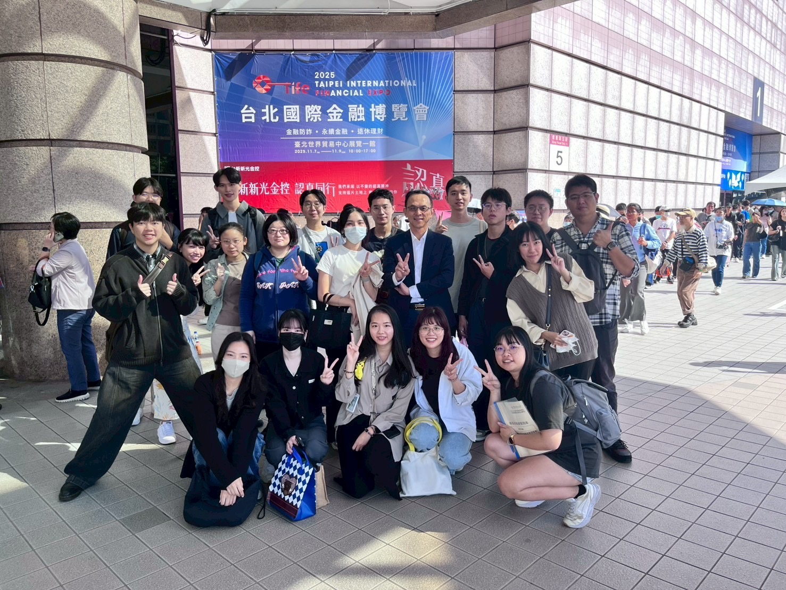
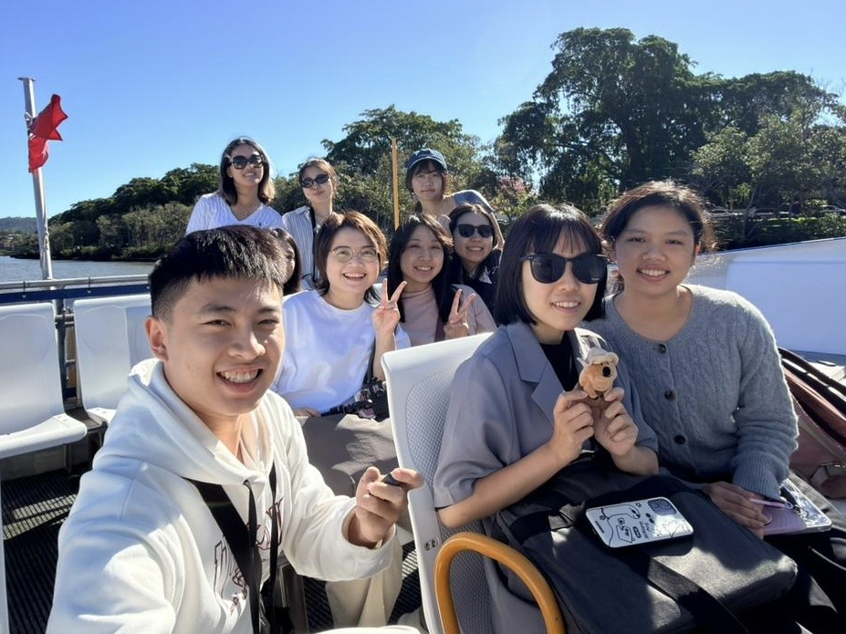

<!DOCTYPE html>
<html lang="zh-TW">
<head>
    <meta charset="UTF-8">
    <meta name="viewport" content="width=device-width, initial-scale=1.0">
    <meta name="robots" content="noindex,nofollow">
    <title>畾瑕虾�� | NTU Application Profile</title>
    <script src="https://cdn.tailwindcss.com"></script>
    <script crossorigin src="https://cdnjs.cloudflare.com/ajax/libs/react/18.2.0/umd/react.production.min.js"></script>
    <script crossorigin src="https://cdnjs.cloudflare.com/ajax/libs/react-dom/18.2.0/umd/react-dom.production.min.js"></script>
    <script src="https://cdnjs.cloudflare.com/ajax/libs/babel-standalone/7.23.4/babel.min.js"></script>
    
    <link href="https://fonts.googleapis.com/css2?family=Noto+Sans+TC:wght@300;400;500;700&family=Lora:ital,wght@0,400;0,600;1,400&display=swap" rel="stylesheet">
    
    <style>
        body { 
            font-family: 'Noto Sans TC', sans-serif; 
            background-color: #ffffff;
            color: #2d3748;
            line-height: 1.8;
            -webkit-font-smoothing: antialiased;
            font-size: 17px; 
        }
        h1, h2, h3, .serif-font { 
            font-family: 'Lora', 'Noto Sans TC', serif; 
        }
        .section-border { 
            border-top: 1px solid #edf2f7; 
        }
        .gallery-grid {
            display: grid;
            grid-template-columns: repeat(auto-fill, minmax(240px, 1fr));
            gap: 1.5rem;
        }
        @keyframes fadeIn {
            from { opacity: 0; transform: translateY(8px); }
            to { opacity: 1; transform: translateY(0); }
        }
        .animate-fade-in {
            animation: fadeIn 0.35s ease-out forwards;
        }
    </style>
</head>
<body>
    <div id="root"></div>

    <script type="text/babel">
        const { useState, useEffect } = React;

        const data = {
            zh: {
                name: "畾瑕虾��",
                title: "瘞貊�蝞∠�撣� Coco",
                email: "yinkoying.yky@gmail.com",
                nav_cv: "�衤犖蝪⊥風",
                nav_projects: "撠��撖血�",
                nav_gallery: "摮貊��芸蔣",
                nav_issues: "�𨀣釣霅圈�",
                nav_menu: "�詨鱓",
                section_bio: "�賊�蝬𤘪風",
                section_study: "�脖耨�閙�",
                section_interests: "�𠉛弦�孵�",
                section_proposal: "�𠉛弦瑽𧢲�",
                section_ai_practice: "AI �啁��寡�撠�号",
                section_awards: "蝡嗉魚蝝���",
                section_qualifications: "撠�平霅厩�",
                section_overseas: "�鍦僑�曉�瘚瑕��枏丐�粹�閮�𧞄",
                section_education: "摮豢風�峕艶",
                section_experience: "撌乩�蝬𤘪風",
                section_language: "�望��賢�",
                toeic: "TOEIC 720",
                quote_text: "�䔶����雿𨀣��粹���葆靘�蔣�選��䔶�閬�捱摰𡄯��喳葆靘�𪑛銝�蝔桀蔣�踴����",
                quote_author: "�� Jane Goodall �滚𧂈敺�",
                view_detail_btn: "�亦�閰喟敦隤芣�",
                view_project_btn: "�亦�雿𨅯�",
                award_project: "雿𨅯�",
                close_modal: "�𣈯�",
                qual_esg: "瘞貊���除�蹱祥��",
                qual_tech: "鞈��蝘烐���犖撌交惣��",
                qual_finance: "�𤏸����獢�恣��",
                gallery_all: "�券��芸蔣",
                gallery_awards: "蝡嗉魚�潸”",
                gallery_projects: "撌乩��亙虜",
                gallery_overseas: "瘚瑕�閬讠�",
                issue_intro_label: "霅圈�蝑��",
                issue_intro_title: "瘞��蹱錇蝑硔���璆剛��贝�鞈��瘝餌�",
                issue_intro: "�穃銁�躰ㄐ閮㗛�撠齿除�蹱祥�����璆剛��贝�蝘烐�鞈����瘙��閫�撖��蝯𣂼��賊��輻����閬譌����贝�閮𠰴�撖血�蝬㯄�嚗峕��箏�澆��脖�甇亦�蝛嗥��誯�嚗𥟇�蝡惩�����湔鰵��",
                issue_categories_label: "������",
                issue_articles_label: "���",
                issue_all: "�券�",
                issue_empty: "�坔�见�憿䂿����甇�銁�渡�銝准��",
                issue_categories: ["瘞��蹱錇蝑𤥁�瘝餌�", "隡�平瘞貊������", "蝘烐����皞鞉祥��"],
                issue_read: "�梯����",
                issue_back: "餈𥪜�����𡑒”",
                issue_questions: "�烐����餈賢�",
                issue_sources: "�������",
                
                interests: [
                    "頝券���除�蹱祥��",
                    "�啣��輻�閰蓥摯",
                    "隡�平瘞貊��剝蠧",
                    "�祆迤頧匧���４摰𡁜�"
                ],
                proposal_title: "頝券���除�蹱錇蝑碶�隡�平���鞎䭾�����齿��頣��箇�銝𠰴�瑹���訾����",
                proposal: [
                    "�箇���楊�嗆錇蝑𣇉眏�啣��函�皞怠恕瘞���斗䰻�駁���４鞎餉�皜偦��嗅漲嚗䔶誑�𢠃�蝞⊥�撠滢�撣���砍虬��𥿢�乓��Ⅱ靽∟�瘞貊��剝蠧閬���勗��券�脯���嗘�閬������典�鞊～����䠷����撖行鴌���銝滚�嚗䔶�璆剖虾�賡𢒰撠滢��𣬚�鞈���游�����典�隤踹極雿栶��𧋦�𠉛弦隞亥枂���撣���砍虬�箇�蝛嗥��㵪��Ｗ�頝券���錇蝑𤥁�瘙�����閬讛��𥪜虾�賢�雿訫��㵪��砍虬閬𤩺芋��𤩎璆准����曄鸌�扯��Ｘ�瘝餌�鞈��嚗峕糓�西�隡�平�航�撖毺��䭾�撌桃㺭�厰���",
                    "�𠉛弦撠��撱箇��𣂼僑�輻��拍鍂撠滨�嚗䔶��啣��函𥿢�亦蒈���蝣唾祥蝝滨恣蝭��嚗䔶誑�𢠃�蝞⊥����畾萇𥿢�乓��Ⅱ靽∟��剝蠧���嚗諹儘隤滚��砍虬�典�撟游漲�拍鍂���蝭���芷��冽����瘙����銝滩��箸𧊋撅亥���𦻖�𡑒���歇�祇�撟游漲��僑�晞��偶蝥�𥼚�𦠜㮾��澈摰斗除擃磰�閮𠰴�鞎∪�鞈��嚗峕炎閬𡝗号�脩��滩�摰峕㟲�扼��䰻撽埈�蝣箔縑��耦�𠰴虾颲刻���祥����鉝����𣂼�靘萘𤩎璆准���璅∪��輻��拍鍂蝯��瘥磰�嚗䔶蒂璅躰�撱惩聦����豢���蔥�梯”�羓��⊥��舫�撠齿����𧢲���"
                ],
                proposal_challenges_title: "�𠉛弦�𣂼�",
                proposal_challenges: [
                    { label: "�拍鍂�����", text: "�啣��其誑�埝𦆮皞鞱�撱惩聦蝞∠�嚗屸�蝞⊥��剝蠧�舀��𠰴�钅����雿萄��賂�����儘隤漤��典�鞊∩蒂璅躰��⊥��寥�����" },
                    { label: "����鞉𧋦", text: "�祇�鞈����誑�齿�撌交������祥����典�隤踵��穿��剝蠧�𦠜祥���璅嗘��賜凒�乩誨銵典祕�𥡝��𢛵��" },
                    { label: "瘥磰�閫��", text: "�Ｘ平���璅∟����畾菟��冽�蝔见虾�賢���蔣�蹂�璆剖��㚁�銝滩�撠��撖笔���榆�啁凒�交飛�䭾䲰�桐��輻���" }
                ],
                proposal_ref_label: "���璁�艙����",
                ai_practice_intro: "2025 撟港葉嚗峕�摰峕��箏�憭批飛���瞈罸�������淾I �啁��寡�撠�号��300 撠𤩺��寡�嚗�飛蝧鍦�摰孵��穿�",
                ai_learning: ["���撘� AI �𤏸��滚���䌊�嗉�閮��閧�", "�𤏸��豢�蝞∠�", "�脩垢�𤏸�撟喳蝱�嗆�����滨頂蝯梢���"],
                ai_practice_outcome: "�嗅�嚗峕�撠��摮賊��冽䲰瘞貊���除�躰��閧奎鞈踝��讠䔄蝷曉�敺格除�䠷��扼��CCUS 瘛券妟蝑𣇉裦���蝣喳儐�啗�蝬㰘𠧧�𤏸�蝑厩雯��極�瑯��",
                
                bio: [
                    "�烐㦛�典�蝡贝枂�堒之摮訾�璆剜偶蝥𣬚䔄撅閧�蝛嗡葉敹��隞餌�蝛嗅𨭌�������箇�瘞貊�閰閖�嚗�祟�梢�曉�隞賭�撣���砍虬瘞貊��勗��詻���頛���𣬚𤩎璆剛�閬𤩺芋隡�平����蹱�嚗峕�瘜冽��唳号�脩��溻����曇�閮𠰴��仿��𣇉Ⅱ靽∟牧�擧�撌桃㺭嚗䔶��见��肽���摨阡��刻�隡�平�Ｘ�鞈��瘝餌��賢���肼瞍𥪯�暻潸��脯��",
                    "�冽鰵蝟餌兛憓��銵𤘪�隞餃�獢�極蝔见葦����穃��拐葉撠譍�璆凋� ISO 14064-1 �� ISO 14067 �脰�皞怠恕瘞����𤩎��４頞唾楚�斗䰻嚗峕𦻖閫貉��蹱㟲�踺����冽䰻霅㕑��折�皞嗪�𡁶�撖血�瘚����𡖂�曉��踹�撠��瘣暸��啣��冽除�躰��瑞蔡嚗���瑁��曉聦閫�撖�除�蹱錇蝑𡝗綫�脫���楊璈罸�皞嗪�朞�鞈���𨀣𦻖��瘙���",
                    "�烐䲰 2026 撟� 9 ����交偶鞊𣂼�璆剝�銵𣬚蜇銵峕�隞餌�蝞∩�����桀�撌乩���鉄�砍像敺�恥����滚���隅�Ｘ㟲����䌊閰𨰻�����𥼚�𤾸��賊�撠���𥪯���眏�澆��啗�嚗峕�隞滚銁蝝舐��𤏸�璆剔�撖血�蝬㯄�嚗䔶蒂敺鮋��齿�瑽讠�閫鍦漲閫�撖毺𧙗���瘙��雿閗��𣇉��折�鞈����楊�券�撌乩�瘚����",
                    "撖拚鰐瘞貊��勗��詻���撠𡒊𥿢�亙�����踹�撠��嚗䔶蝙�烐��脖�甇仿�皜��銝滚��冽���４蝞∠���号�脰�瘙��雿閖��伐��拍鍂璇苷辣��祥���皞𣂷��𣬚�隡�平嚗��憒����𣶹�航�撖毺��䭾�撌桃㺭嚗��撣峕��誯��啣�蝷暹�蝘穃飛��錇蝑硋��鞱�撖西��寞����蝺湛�撠��嗘�撖血�閫�撖蠘��𣇉��舀炎撽㛖��𠉛弦�誯���"
                ],
                study_plan: [
                    "�穃銁瘛⊥�憭批飛�砍�銵峕錇摮貊頂靽桃��砍��輻���兛憓�錇蝑硔�����瘞貊����蝛嗆䲮瘜𤏪��见��肽��兛憓�降憿��雿閖�脣��輻�銝西氜撖艾���脣��箏�憭批飛�砍�銵峕錇�冽錇蝑硋飛蝟餌◣憯怎号敺䕘��煾�誯��誩��𠉛弦�寞�����蹱��祆��𠰴��鞉楛�硋��鞱��𨥈�銋煺耨蝧雴��脩��拙飛���皞鞟�瞈笔飛���皞鞟�瞈笔飛��除�躰��瑁矽�拙��埝𦆮鈭斗��嗅漲蝑㕑玨蝔页��鞉郊�𡁶�瘞��蹱祥���隡�平頧匧���",
                    "撖拚鰐瘞貊��勗��詻���撠𡒊𥿢�亙�����踹�撠��嚗䔶蝙�烐��脖�甇仿�皜��銝滚��冽���４蝞∠���号�脰�瘙��雿閖��伐��拍鍂璇苷辣��祥���皞𣂷��𣬚�隡�平嚗��憒����𣶹�航�撖毺��䭾�撌桃㺭嚗��撣峕��誯��啣�蝷暹�蝘穃飛��錇蝑硋��鞱�撖西��寞����蝺湛�撠��嗘�撖血�閫�撖蠘��𣇉��舀炎撽㛖��𠉛弦�誯����隞脫��蹱��������具�𠄎ensitizing just transition in Taiwan�㕑�隢硋�甇���见�雿訫瑌憿舀楊�嗆錇蝑碶葉���撟喟�嚗䔶���枂頝冽��𨅯嘑銵𣬚�銝滢��氬����𥕦辣隡賊�坔�见�憿峕�霅矋��𠉛弦頝券���除�蹱錇蝑𤥁�瘙��雿閗氜�其��𣬚𤩎璆剛�閬𤩺芋���撣���砍虬嚗䔶誑�𠰴虾閫�撖毺��䭾�撌桃㺭撠滚�閬讛��𥪜��齿�雿訫�蝷箝��"
                ],

                education: [
                    { school: "�讠��箏�憭批飛", dept: "�砍�銵峕錇�冽錇蝑硋飛蝟餌�蝛嗆�", degree: "", period: "2022 - ��平" },
                    { school: "瘛⊥�憭批飛", dept: "�砍�銵峕錇摮貊頂", degree: "摮詨ㄚ", period: "2018 - 2021" }
                ],

                experience: [
                    { role: "�毺恣隡��", org: "瘞貉���平��銵�", period: "2026.09 - Present" },
                    { role: "撠��撌亦�撣�", org: "�啁頂�啣���銵𤘪��𣂼���", period: "2026.01 - 2026.09" },
                    { role: "�𠉛弦�拍�", org: "�讠��箏�憭批飛 隡�平瘞貊��澆��𠉛弦銝剖� / 瘞烐�����厩�蝛嗡葉敹�", period: "2022.09 - 2025.12" }
                ],

                awards: [
                    { year: "2026", title: "瘞��躰��瑕肟�誩祕雿𦦵奎鞈�", project: "蝣喳�嚗𡁶冗��敺格除�䠷��扳捱蝑硋像��", result: "璁桃㬢 瘞��蹱��函鸌�亦�", org: "�躰��� / 鈭日�𡁻�銝剖亢瘞�情蝵�", desc: "蝯𣂼� GIS 蝛粹�憸券麬敹怎祟�� NbS �芰�閫�䲮嚗�遣蝡见凝瘞��躰矽�抵�蝷曉��峕�扳捱蝑𡝗𣈲�湔沲瑽卝��", link: "https://tanji2026.github.io/nbs/" },
                    { year: "2026", title: "蝚砌�撅� CCUS �菜��蹱�敺菟�瘣餃�", project: "CCUS 瘛券妟蝑𣇉裦璅⊥挱��", result: "璁桃㬢蝷暹�蝯��蝑厩�", org: "銝剖亢憭批飛 / CCUS 蝘穃飛�躰��典誨閮�𧞄", desc: "撱箇蔭璅⊥挱�讠��啣�嚗��蝣單��㗇�銵栞��輻�隤睃�頧匧��箏��躰��脫�銵⊥��嗥�鈭鍦�閰蓥摯撌亙���", link: "https://tanji2026.github.io/ccus/" },
                    { year: "2026", title: "�箇��諹���- 瘞貊��賣��菜�撖虫�蝡嗉魚", project: "TanJi 瘛券妟蝢文�撟喳蝱", result: "�厩�銴�魚", org: "�躰��� / �讠�蝘穃飛撌亥��𡁶�擗�", desc: "���瘞煾�撠誯�鞈�����璈笔�嚗諹���楊�嗥黎�蠘�蝣單𠽌�𥕦���沲瑽卝��", link: "https://tanji2026.github.io/twenergy/" },
                    { year: "2026", title: "蝚砍�撅� �𡑒�憭助-STEP瘞貊�銵����", project: "銝厰雄瘞貊�銵䕘�AI �箸�鈭日�𡁜�瘞穃��萄像��", result: "�亙�瘙箄魚", org: "�箏��臬�憭批飛蝟餌絞", desc: "�Ｚ�雿𡒊４蝘餃�蝬脩窗閬誩���摹�Ｙ黎擃𠉛宏�閙��𠹺��栶��", link: "https://tanji2026.github.io/sanying/" },
                    { year: "2026", title: "2026 �啁�隞輻�閮剛�蝡嗉魚", project: "MycoTanji 隞輻�蝷曉�蝣喳儐�啁頂蝯�", result: "�厩�瘙箄魚", org: "�啁�隞輻�蝘烐��澆��娍� / �啣�撣�錇摨�", desc: "隞亦����閫���嗉�隡啁冗��敺桀�蝣喳儐�唳��𨳍��", link: "https://tanji2026.github.io/biomimicry/" },
                    { year: "2026", title: "2026 Impact Star �鍦僑敶梢𣳽�𥕦��閗魚", project: "銝匧魚�瑚犖嚗𡁏�頝臬�頩�", result: "�厩�銴�魚", org: "�啣�撣�錇摨𣈯�撟游�", desc: "撱箇蔭鈭鍦�撘讐雯����脤����喟絞撌亙�嚗峕䔝閮擧彍雿滚�蝷箏��唳䲮���蝬剛風銋见𨭌�𨳍��", link: "https://tanji2026.github.io/sanxia/" },
                    { year: "2026", title: "2026 �啣�撣��撟湔除�躰��訫噩隞�", project: "蝣喳����嚗𡁜銁�啣凝�见儐�啁雯蝯�", result: "�脣�瘙粹�", org: "�啣�撣�錇摨� / �唬�撅�", desc: "蝯𣂼� IoT �拍���葫��４瘞格���葫嚗諹氜撖衣冗���㗇�撱Ｘ��拙儐�啗��硔��", link: "https://tanji2026.github.io/tanji-loop/" },
                    { year: "2026", title: "2026 IASE 敶梢𣳽�𥕦肟�啁�", project: "銝匧魚�瑚犖嚗𡁏�頝臬�頩�", result: "�仿��鞾�撟港犖�溻��", org: "IASE �钅�瘞貊�隤滩��娍�", desc: "�游��唳䲮撌亙�蝬脩窗��彍雿滚�����ｇ�閰蓥摯�鍦僑�典�瘞貊�撖西���虾銵諹楝敺㻫��", link: "https://tanji2026.github.io/sanxia/" }
                ],
                qualifications: {
                    esg: [
                        { issuer: "DNV", items: ["ISO 14064-1 �折��亥���"] },
                        { issuer: "鞎∪�瘜蓥犖��平�澆��𠉛弦��", items: ["ISO 14064-1 皞怠恕瘞���斗䰻蝞∠�撣�", "ISO 14067 �Ｗ�蝣唾雲頝∠𥿢�亦恣��葦", "瘞貊��勗��貊恣��葦"] },
                        { issuer: "AFNOR", items: ["ISO 14067 �Ｗ�蝣唾雲頝∩蜓隞餌里�詨摱"] },
                        { issuer: "蝬𤘪��� iPAS", items: ["瘛券妟蝣唾���恣��葦嚗�葉蝝𡄯��萘�嚗�"] },
                        { issuer: "�啣���", items: ["皞怠恕瘞���斗䰻雿𨀣平�仿�鈭箏摱", "�啣��躰�鈭箏摱"] },
                        { issuer: "�啣�撣�錇摨�", items: ["雿𡒊４蝷曉�閬誩�撣�"] },
                    ],
                    tech: [
                        { issuer: "AWS", items: ["AWS Certified AI Practitioner"] },
                        { issuer: "Microsoft", items: ["Azure AI-900"] },
                        { issuer: "蝬𤘪��� iPAS", items: ["AI �厩鍂閬誩�撣恬��萘�嚗�"] },
                        { issuer: "Google Cloud", items: ["Google Cloud 摮貊�蝯鞉平"] },
                        { issuer: "�餉����賢抅�烐�嚗㇍QC嚗�", items: ["鞈��蝘烐� Python 撠�平蝝�", "Microsoft Office 撠�平蝝�"] }
                    ],
                    finance: [
                        { issuer: "�啁��𤏸��磰���", items: ["�𤏸�蝘烐��𤤿䰻霅䀹炎摰𡁏葫撽�"] },
                        { issuer: "霅匧��冽�鞎典��渡䔄撅訫抅�烐�", items: ["�𤏸�撣�聦撣貉����璆剝�敺�", "瘞貊��澆��箇��賢�皜祇�"] },
                        { issuer: "�𧼮���", items: ["PMP 撠��蝞∠�鈭箸�撖血���"] }
                    ]
                },
                overseas: {
                    title: "115撟游漲蝚砌�璇舀活�餅絲憭𣇉膨蝧𠉛� G-3-3�峕��羓��寧���",
                    desc: "�躰��券�撟渡䔄撅閧蔡�誯�瘚瑕�閬讠���畺閮栞�鈭斗��𡃏�皞鞉𣈲����𥪜𨭌�鍦僑�枏��钅�閬㚚�����閗��䜘��㬢�貉絕瞉單散撣���舀𧋦 EarthCheck Academy 閬讠�嚗𣬚�蝧埝偶蝥峕��𡃏�霅剹��兛憓�蜀��𧙗皜祈��桃��啁恣����",
                    video_link: "https://youtu.be/PpYg8SxHXf8?si=BNPhJUeTvJqRIijY",
                    video_text: "閫��贝�蝧垍���蔣��"
                }
            },
            en: {
                name: "YIN, KO-YING",
                title: "Sustainability Manager Coco",
                email: "yinkoying.yky@gmail.com",
                nav_cv: "Curriculum Vitae",
                nav_projects: "Professional Projects",
                nav_gallery: "Gallery",
                nav_issues: "Issues of Interest",
                nav_menu: "Menu",
                section_bio: "Relevant Experience",
                section_study: "Motivation for Graduate Study",
                section_interests: "Research Focus",
                section_proposal: "Research Concept",
                section_ai_practice: "AI Rising Talent Training Program",
                section_awards: "Competition Records",
                section_qualifications: "Certifications",
                section_overseas: "Youth Overseas Dream Fund Program",
                section_education: "Education",
                section_experience: "Work Experience",
                section_language: "English Proficiency",
                toeic: "TOEIC 720",
                quote_text: "�乪hat you do makes a difference, and you have to decide what kind of difference you want to make.��",
                quote_author: "�� Dr. Jane Goodall",
                view_detail_btn: "View Details",
                view_project_btn: "View Project",
                award_project: "Project",
                close_modal: "Close",
                qual_esg: "Sustainability Governance",
                qual_tech: "IT & AI",
                qual_finance: "Finance & Project Mgmt",
                gallery_all: "All Highlights",
                gallery_awards: "Presentations",
                gallery_projects: "Work Life",
                gallery_overseas: "Apprenticeship",
                issue_intro_label: "Issue Notes",
                issue_intro_title: "Climate policy, corporate transition, and resource governance",
                issue_intro: "These notes bring together policies, regulations, public information, and professional experience to explore climate governance, corporate transition, and the resource demands of technology. I will continue to add articles and questions for further research.",
                issue_categories_label: "Topics",
                issue_articles_label: "Articles",
                issue_all: "All",
                issue_empty: "Articles in this topic are being prepared.",
                issue_categories: ["Climate Policy & Governance", "Corporate Sustainability & Transition", "Technology & Resource Governance"],
                issue_read: "Read article",
                issue_back: "Back to articles",
                issue_questions: "Questions I will keep asking",
                issue_sources: "Sources",
                
                interests: [
                    "Cross-Ministerial Climate Governance",
                    "Environmental Policy Evaluation",
                    "Corporate Sustainability Disclosure",
                    "Just Transition & Carbon Pricing"
                ],
                proposal_title: "Distributional Effects of Corporate Compliance Burdens under Cross-Ministerial Climate Policies: An Analysis of Taiwan's Listed Firms",
                proposal: [
                    "Taiwan's net-zero transition involves the Ministry of Environment's greenhouse-gas reporting, carbon fee, and emissions-reduction measures as well as the Financial Supervisory Commission's phased accounting, assurance, and sustainability-disclosure requirements for listed firms. These policies differ in coverage, reporting boundaries, and timing, and may require different levels of information preparation and internal coordination. Taking Taiwan's listed firms as the study population, I ask how potential compliance burdens are distributed across combinations of policy requirements, and whether observable responses vary with firm size, industry, emissions characteristics, and existing governance resources.",
                    "I will first map policy applicability by year, identifying which firms fall under Ministry of Environment inventory or carbon-fee rules and which FSC accounting, assurance, and disclosure requirements apply at each stage. A firm outside a particular rule's scope will not be treated as non-compliant. Using available annual reports, sustainability reports, public greenhouse-gas information, and financial data, I will examine disclosure scope and completeness, verification or assurance, and identifiable governance arrangements. Comparisons will be stratified by industry, size, and policy exposure, while facility-to-company or consolidated-reporting boundaries that cannot be matched reliably will be flagged."
                ],
                proposal_challenges_title: "Research Limitations",
                proposal_challenges: [
                    { label: "Coverage and Boundaries", text: "The Ministry of Environment regulates sources and facilities, while FSC disclosures may cover individual and consolidated firms; applicability and unmatched cases must be identified." },
                    { label: "Compliance Costs", text: "Public records rarely show staff time, external fees, or internal coordination costs; disclosure and governance indicators cannot directly measure actual burden." },
                    { label: "Interpreting Differences", text: "Industry, firm size, and phased implementation may jointly affect responses; observed differences cannot be attributed directly to one policy." }
                ],
                proposal_ref_label: "Conceptual reference",
                ai_practice_intro: "In mid-2025, I completed a 300-hour AI Rising Talent program jointly run by National Taipei University and the Ministry of Economic Affairs. The training covered:",
                ai_learning: ["Generative AI for financial services and natural language processing", "Financial data management", "Cloud financial-platform architecture and financial-system development"],
                ai_practice_outcome: "I later applied these skills in sustainability and climate-action competitions, building web tools for community microclimate resilience, CCUS net-zero strategy simulations, low-carbon circularity, and green finance.",
                
                bio: [
                    "As a research assistant at National Taipei University's Center for Corporate Sustainability, I participated in the Taiwan Sustainability Evaluation and reviewed more than one thousand sustainability reports from listed companies. Comparing firms across industries and sizes, I noticed differences in reporting scope, emissions information, and descriptions of verification or assurance. This raised questions about the roles of regulatory coverage and existing data-governance capacity.",
                    "As a project engineer at Xinxi Environmental Technology, I supported SMEs with greenhouse-gas and product-carbon-footprint inventories under ISO 14064-1 and ISO 14067. I encountered the practical work of data preparation, external verification, and internal coordination. I was also stationed at the Climate Change Administration, Ministry of Environment, on a government project, where I observed the need for inter-agency communication and data alignment during policy implementation.",
                    "I joined Bank SinoPac's headquarters as an Operations and Management Planning Specialist in September 2026. My current work includes tracking developments in fair customer treatment and financial inclusion, contributing to self-assessments and award submissions, and collaborating on related projects. Having recently joined, I am still building experience in banking while observing how supervisory expectations become internal data and cross-departmental workflows.",
                    "Reviewing sustainability reports, supporting inventories, and working on a government project led me to ask how carbon-management and disclosure requirements across agencies fit together, and how firms with different regulatory exposure and governance resources respond. I hope to turn these practical observations into testable questions through training in environmental social science, policy analysis, and empirical methods."
                ],
                study_plan: [
                    "I studied public policy, environmental policy, sustainability, and research methods at Tamkang University, where I began to consider how environmental issues enter the policy agenda and become practice. At National Taipei University's master's program in Public Administration and Policy, I strengthened my analytical foundation through quantitative methods and cost-benefit analysis for public affairs. Courses in conservation biology, resource and energy economics, climate adaptation, and emissions trading helped me focus on climate governance and corporate transition.",
                    "Reviewing sustainability reports, supporting greenhouse-gas inventories, and participating in a government project have led me to ask: How do carbon-management and disclosure requirements from different ministries and agencies fit together? How do companies with different regulatory obligations and governance resources respond in observable ways? Through training in environmental social science, policy analysis, and empirical methods, I hope to turn these practical observations into testable research questions. In 'Sensitizing just transition in Taiwan,' Professor John Chung-En Liu and Shun-Nan Chiang discuss how just transition brings inequalities in net-zero policies into focus and point to inconsistencies in implementation across agencies. Building on this line of inquiry, I hope to examine how cross-ministerial climate-policy requirements apply to Taiwan's listed and OTC companies across industries and sizes, and what differences in their observable responses may suggest about the distribution of compliance burdens."
                ],
                education: [
                    { school: "National Taipei University", dept: "Graduate Institute of Public Administration & Policy", degree: "", period: "2022 - Incomplete" },
                    { school: "Tamkang University", dept: "Department of Public Administration", degree: "B.A.", period: "2018 - 2021" }
                ],
                experience: [
                    { role: "Operations & Management Planning Specialist", org: "Bank SinoPac", period: "2026.09 - Present" },
                    { role: "Project Engineer", org: "Xinxi Environmental Technology Co., Ltd.", period: "2026.01 - 2026.09" },
                    { role: "Research Assistant", org: "Center for Corporate Sustainability / Election and Public Opinion Study Center, NTPU", period: "2022.09 - 2025.12" }
                ],
                awards: [
                    { year: "2026", title: "Climate Change Creative Practice Competition", project: "TanJi: Community Microclimate Resilience Decision Platform", result: "Won Special Award", org: "MOE / CWA", desc: "Developed a decision-support platform utilizing GIS risk screening and NbS for community climate resilience.", link: "https://tanji2026.github.io/nbs/" },
                    { year: "2026", title: "2nd CCUS Creative Lesson Plan Selection", project: "CCUS Net-Zero Strategy Simulator", result: "Won Excellence Award (Social Division)", org: "NCU / CCUS Science Education Program", desc: "Engineered an interactive CCUS net-zero strategy simulator translating policy into role-based tools.", link: "https://tanji2026.github.io/ccus/" },
                    { year: "2026", title: "Taiwan 'ENERGY' Sustainable Energy Competition", project: "TanJi Net-Zero Crowdfunding Platform", result: "Semi-Finalist", org: "MOE / National Science and Technology Museum", desc: "Proposed a green finance crowdfunding platform to lower the threshold for zero-carbon investments.", link: "https://tanji2026.github.io/twenergy/" },
                    { year: "2026", title: "4th USTP U-STEP Sustainability Action Award", project: "SanYing Sustainable Mobility: AI-Powered Civic Co-creation Platform", result: "Finalist", org: "University System of Taipei", desc: "Explored low-carbon commuting networks and transit equity for vulnerable groups.", link: "https://tanji2026.github.io/sanying/" },
                    { year: "2026", title: "2026 Taiwan Biomimicry Design Challenge", project: "MycoTanji Biomimicry Community Carbon Cycle System", result: "Finalist", org: "Biomimicry Taiwan / NTPC", desc: "Modeled community mycelial recycling to assess local organic carbon loops.", link: "https://tanji2026.github.io/biomimicry/" },
                    { year: "2026", title: "2026 Impact Star Youth Influence Competition", project: "Sanxia Artisan Quest", result: "Semi-Finalist", org: "NTPC Youth Dept.", desc: "Evaluated interactive web interfaces linking traditional workshops with regional revitalization.", link: "https://tanji2026.github.io/sanxia/" },
                    { year: "2026", title: "2026 New Taipei City Youth Climate Action Campaign", project: "TanJi Loop: Local Micro-Circular Network", result: "Finalist", org: "NTPC Government / EPB", desc: "Deployed IoT sensors and C/N ratio tracking for community organic composting.", link: "https://tanji2026.github.io/tanji-loop/" },
                    { year: "2026", title: "2026 IASE Impact Innovation Award", project: "Sanxia Artisan Quest", result: "Selected [Youth Talent]", org: "IASE", desc: "Mapped local craft networks and digital participatory tools for regional sustainability.", link: "https://tanji2026.github.io/sanxia/" }
                ],
                qualifications: {
                    esg: [
                        { issuer: "DNV", items: ["ISO 14064-1 Internal Verifier"] },
                        { issuer: "Commercial Development Research Institute", items: ["ISO 14064-1 GHG Inventory Management Specialist", "ISO 14067 Product Carbon Footprint Specialist", "Sustainability Reporting Manager"] },
                        { issuer: "AFNOR", items: ["ISO 14067 Product Carbon Footprint Lead Auditor"] },
                        { issuer: "Ministry of Economic Affairs iPAS", items: ["Net-Zero Carbon Planning Manager (Intermediate / Entry)"] },
                        { issuer: "Ministry of Environment", items: ["GHG Inventory Verification Personnel", "Environmental Education Personnel"] },
                        { issuer: "New Taipei City Government", items: ["Low-Carbon Community Planner"] },
                    ],
                    tech: [
                        { issuer: "AWS", items: ["AWS Certified AI Practitioner"] },
                        { issuer: "Microsoft", items: ["Azure AI-900"] },
                        { issuer: "Ministry of Economic Affairs iPAS", items: ["AI Application Planner (Introductory)"] },
                        { issuer: "Google Cloud", items: ["Google Cloud Program Completion"] },
                        { issuer: "Computer Skills Foundation (TQC)", items: ["IT Python Professional", "Microsoft Office Professional"] }
                    ],
                    finance: [
                        { issuer: "Taiwan Academy of Banking and Finance", items: ["FinTech Knowledge Proficiency Test"] },
                        { issuer: "Securities and Futures Institute", items: ["Financial Markets Knowledge & Ethics", "Sustainable Development Basic Ability Test"] },
                        { issuer: "Ministry of Labor", items: ["PMP Project Management Practice"] }
                    ]
                },
                overseas: {
                    title: "2026 First Cohort 繚 Overseas Soar Group G-3-3 �嚹ravel Green Equation��",
                    desc: "A Youth Development Administration initiative that supports overseas apprenticeships, training, exchange, and resource access to help young people build international perspectives and capacity for action. I was selected for an apprenticeship at EarthCheck Academy in Brisbane, studying sustainable tourism certification, environmental performance monitoring, and destination management.",
                    video_link: "https://youtu.be/PpYg8SxHXf8?si=BNPhJUeTvJqRIijY",
                    video_text: "Watch Apprenticeship Video"
                }
            }
        };

        const professionalProjects = [
            {
                id: "proj-bank",
                org: { zh: "瘞貉���平��銵�", en: "Bank SinoPac" },
                role: { zh: "�毺恣隡��", en: "Operations & Management Planning Specialist" },
                period: "2026.09 - Present",
                src: "images/proj-bank.jpg",
                title: { zh: "�砍像敺�恥����滚����獢�", en: "Fair Customer Treatment & Financial Inclusion Project" },
                desc: { 
                    zh: "�𨀣釣�砍像敺�恥����滚�����见�憭𤥁隅�ｇ��𥪜𨭌�𡡞��梁���䌊閰蓥�璆剖��賊�撠��閬誩���恣����", 
                    en: "Monitor domestic and international developments in fair customer treatment and financial inclusion; assist with award submissions, internal self-assessments, and the planning and management of related projects." 
                },
                details: {
                    context: {
                        zh: "��銵峕平�賢祕�砍像敺�恥����滚���歇�鞟�銝餌恣璈罸�閰閙瓲���閬��璅辷���敺䂿蜇銵諹�閫鍦遣蝡见�����折�瘝餌�����蹱��嗚��",
                        en: "Implementing fair customer treatment has become a key governance metric, requiring robust internal mechanisms from a headquarters perspective."
                    },
                    implementation: {
                        zh: "�桀�撌乩���𡠺嚗�1. �渡��见�憭硋�撟喳�摰Ｚ��𤏸��见�頞典𨋍��\n2. �𥪜𨭌�賊��𡡞��梁���\n3. ����砍像敺�恥�芾�雿𨀣平��\n4. �𥪜𨭌�賊�撠������蹱㟲�踺��",
                        en: "My current work includes: 1. Tracking developments in fair customer treatment and financial inclusion.\n2. Supporting related award submissions.\n3. Contributing to internal self-assessments.\n4. Assisting with project coordination and data preparation."
                    },
                    reflection: {
                        zh: "�烐䲰 2026 撟� 9 ����交偶鞊鞾�銵䕘��桀�隞滚銁蝝舐�撖血�蝬㯄�嚗偦�嗘遢撌乩�霈𤘪��见�敺鮋��齿�瑽讠�閬𤥁�嚗諹�撖毺𧙗���瘙��雿閗��𣇉��折�撌乩�瘚����",
                        en: "I joined Bank SinoPac in September 2026 and am still building practical experience. This work offers a new perspective on how financial institutions translate supervisory expectations into internal workflows."
                    }
                },
                tags: { zh: ["�𤏸��见�", "�折�瘝餌�", "撠��閬誩�"], en: ["Financial Inclusion", "Internal Governance", "Project Planning"] }
            },
            {
                id: "proj-xinxi",
                org: { zh: "�啁頂�啣���銵𤘪��𣂼���", en: "Xinxi Environmental Technology" },
                role: { zh: "撠��撌亦�撣�", en: "Environmental Project Engineer" },
                period: "2026.01 - 2026.09",
                src: "images/proj-xinxi.jpg",
                title: { zh: "銝剖�隡�平蝣喟𥿢�亥�撠𤾸�獢�", en: "SME Carbon Inventory Consultation" },
                desc: { 
                    zh: "�瑁��祇���閮�𧞄嚗�祕�啗粥閮芷�撅砍�撌亦�撌亙�嚗���拙銁�唬葉撠譍�璆剝�脰� ISO 14064-1 �� ISO 14067 蝣喟𥿢�乓��", 
                    en: "Executed public sector programs, visiting local manufacturers to guide them through ISO 14064-1 and ISO 14067 carbon inventories." 
                },
                details: {
                    context: {
                        zh: "�滚��祇�����銁�唳�蝣唾��恬�憭𡁏彍�喟絞鋆賡�䭾平�券𢒰撠齿�蝣唾�瘙��嚗峕芦�漤𢒰�典�璆凋犖�∩�頞唾��鞟��厰���𤌴憓���",
                        en: "In response to government decarbonization initiatives, many traditional manufacturers face severe shortages of specialized personnel and limited budgets."
                    },
                    implementation: {
                        zh: "閬芾䌊韏啗赤�穃惇�𣂼�蝑匧極撱𩤃��詨��Ｙ�瘣餃��豢����皞鞱�㛖鍂蝝�����𥪜𨭌撱䭾䲮撱箇�皞怠恕瘞���斗䰻皜��嚗䔶蒂�箏�蝥𣬚�蝚砌��寞䰻霅匧�憟賣��踺��",
                        en: "I visited manufacturing plants to verify activity data and energy usage, helping facility managers compile accurate greenhouse gas inventories for third-party audits."
                    },
                    reflection: {
                        zh: "�函洵銝�蝺𡁶�頛𥪜��𡒊�銝哨��烐楛�駁����撠誩�撌亙��烾��潸�皞琜���誑�劐�蝜�����閬讛�瘙���坔����憿臭�瘛券妟頧匧��𡒊�銝剔�鞈��銝滚像蝑厩𣶹鞊～��",
                        en: "Seeing the immense pressure that compliance places on small, under-resourced factories highlighted the reality of resource inequality during the net-zero transition."
                    }
                },
                tags: { zh: ["ISO 14064-1", "�曉聦�斗䰻", "銝剖�隡�平頛𥪜�"], en: ["ISO 14064-1", "On-site Auditing", "SME Consultation"] }
            },
            {
                id: "proj-ntpu",
                org: { zh: "�箏�憭批飛 隡�平瘞貊��澆��𠉛弦銝剖�", en: "Center for Corporate Sustainability, NTPU" },
                role: { zh: "�𠉛弦�拍�", en: "Research Assistant" },
                period: "2022.09 - 2025.12",
                src: "images/proj-ntpu.jpg",
                title: { zh: "�箇�瘞貊�閰閖��� ESG �勗��詨祟��", en: "Taiwan Sustainability Evaluation" },
                desc: { 
                    zh: "����箇�瘞貊�閰閖�嚗�祟�曹���遢銝𠰴�瑹��璆剔�瘞貊��勗��賂��渡��箏恥閫��� ESG �剝蠧�豢����璅踺��", 
                    en: "Participated in the Taiwan Sustainability Evaluation, auditing corporate sustainability reports and organizing ESG disclosure data." 
                },
                details: {
                    context: {
                        zh: "�滚��见振��偶蝥諹�閮𦠜号�脰��吔��穃�煾�閬���见�銝𠰴�瑹���賊��𦦵��噼瓷�躰�閮𠺪��脰�摰Ｚ�銝𠉛�瑽见���４����駁���",
                        en: "Aligned with national sustainability disclosure roadmaps, there is a need to objectively structure the non-financial information of listed companies."
                    },
                    implementation: {
                        zh: "撠滨� GRI��SASB 蝑匧��𥟇����銝餌恣璈罸�������璅辷��穃���祟�曹�頞��銝���遢���撣��隡�平瘞貊��勗��賂�銝阡�脰�蝟餌絞�𣇉�鞈���駁���",
                        en: "I evaluated over a thousand sustainability reports against GRI, SASB, and domestic regulatory standards to build a comprehensive ESG scoring database."
                    },
                    reflection: {
                        zh: "�嗘遢撌乩��箸�撱箇�鈭����楊�Ｘ平 ESG �豢�����𣂼抅蝷𠬍��峕��睲�閫�撖笔�嚗�之�衤�璆剛�銝剖�隡�平�刻�閮𦠜号�脩�鞈��銝𦠜��烾�撣賊＊�㛖��賢榆��",
                        en: "This work built my quantitative analysis skills for non-financial data. It also revealed a stark contrast in reporting capabilities between large corporations and SMEs."
                    }
                },
                tags: { zh: ["ESG 閰閖�", "瘞貊��勗���", "鞈��璇喟�"], en: ["ESG Frameworks", "Reporting", "Data Organization"] }
            }
        ];

        const galleryItems = [
            { id: 'overseas-01', category: 'overseas', src: 'images/gallery-overseas-01.jpg', caption: { zh: 'EarthCheck 蝮賡�', en: 'EarthCheck Headquarters' }, desc: { zh: '隤滩�瘞貊����隤滩�憒��隞亦兛憓���冗���瘝餌����嚗諹蕭頩斤𤌍��𧑐���璆剔�瘞貊�蝮暹���', en: 'Examined how sustainability-tourism certification uses environmental, social, and governance indicators to track the sustainability performance of destinations and businesses.' } },
            { id: 'overseas-02', category: 'overseas', src: 'images/gallery-overseas-02.jpg', caption: { zh: '�堒硫�砍�', en: 'South Bank Parklands' }, desc: { zh: '閫�撖�眾撗貊��啜��郊銵𣬚征�栞��砍�閮剜鴌��㟲����肽��除�躰矽�抵�摰𨅯��𤾸����靽���', en: 'Observed how riverside green space, walking networks, and public facilities can be integrated into an open urban landscape, linking climate adaptation with liveability.' } },
            { id: 'overseas-03', category: 'overseas', src: 'images/gallery-overseas-03.jpg', caption: { zh: '撣���舀𧋦���銝剖�', en: 'Brisbane Convention and Exhibition Centre' }, desc: { zh: '敺𧼮之�𧢲�撅訫聦�毺��賣���漱�朞�瘣餃�蝞∠�嚗𣬚�閫�偶蝥峕暑�閖�雿𡒊兛憓���羓�撖血���', en: 'Considered how energy, transport, and event management at a major convention venue can reduce the environmental impacts of large-scale events.' } },
            { id: 'overseas-04', category: 'overseas', src: 'images/gallery-overseas-04.jpg', caption: { zh: '暺��瘚瑕硫', en: 'Gold Coast' }, desc: { zh: '�誯�瘝踵絲�賢�����匧𧑐�荔��肽��絲撗訾��脯����𦠜㗁頛㕑��唳䲮蝬𤘪�銋钅���像銵～��', en: 'Reflected on the balance between coastal conservation, tourism carrying capacity, and the local economy in a coastal destination.' } },
            { id: 'overseas-05', category: 'overseas', src: 'images/gallery-overseas-05.jpg', caption: { zh: '�賢�瘚瑕硫', en: 'Sunshine Coast' }, desc: { zh: '敺噼䌊�嗉�皞鞱�閫��厩䔄撅蓥蒂摮条��������圾�桃��啁恣���雿訫�憿抒��卝��冗�����摰ａ�撽𨰜��', en: 'Considered how destination management can balance ecological protection, community participation, and visitor experience where natural assets and tourism coexist.' } },
            { id: 'overseas-06', category: 'overseas', src: 'images/gallery-overseas-06.jpg', caption: { zh: '瞉單散�閧���', en: 'Australia Zoo' }, desc: { zh: '敺鮋��笔��拐��脰��啣��躰����蝷箄身閮��隤滩�閫��匧聦�������拙�璅��扳�霅条��航���', en: 'Explored how wildlife conservation and environmental-education design can help tourism venues strengthen public awareness of biodiversity.' } },
            { id: 'award-01', category: 'awards', src: 'images/gallery-award-01.jpg', caption: { zh: '蝣喳�嚗𡁶冗��敺格除�䠷��扳捱蝑硋像��', en: 'TanJi: Community Microclimate Resilience Decision Platform' }, desc: { zh: '�箸除�躰��瑕肟�誩祕雿𦦵奎鞈賡��潘�蝯𣂼� GIS 憸券麬蝭拇炎��䌊�嗥��祈圾�對��𥪜𨭌蝷曉��脰�敺格除�躰矽�抵��峕�扳捱蝑硔��', en: 'Developed for the Climate Change Creative Practice Competition, this platform combines GIS risk screening with nature-based solutions to support community microclimate adaptation and resilience decisions.' } },
            { id: 'award-02', category: 'awards', src: 'images/gallery-award-02.jpg', caption: { zh: 'CCUS 瘛券妟蝑𣇉裦璅⊥挱��', en: 'CCUS Net-Zero Strategy Simulator' }, desc: { zh: '�箇洵鈭�� CCUS �菜��蹱�敺菟�閮剛�嚗��蝣單��㗇�銵栞��輻�隤睃�頧匧��箏虾�滢���楊�嗥��仿�����', en: 'Created for the 2nd CCUS Creative Lesson Plan Selection, this interactive simulator translates carbon-capture technologies and policy incentives into net-zero strategy choices.' } },
            { id: 'award-03', category: 'awards', src: 'images/gallery-award-03.jpg', caption: { zh: '蝣喳�瘛券妟蝢文�撟喳蝱', en: 'TanJi Net-Zero Crowdfunding Platform' }, desc: { zh: '�箄枂���諹��齿偶蝥諹�皞𣂼肟�誩祕雿𦦵奎鞈賡��潘��Ｙ揣蝢斤䔿�蠘�����脤��滚�雿閖�雿𤾸���楊�嗆�鞈����瑼颯��', en: 'Developed for the Taiwan �諪NERGY�� Sustainable Energy Competition, this platform explores how crowdfunding and green finance can lower participation barriers for net-zero investment.' } },
            { id: 'award-04', category: 'awards', src: 'images/gallery-award-04.jpg', caption: { zh: '銝厰雄瘞貊�銵䕘�AI �箸�鈭日�𡁜�瘞穃��萄像��', en: 'SanYing Sustainable Mobility: AI-Powered Civic Co-creation Platform' }, desc: { zh: '�箇洵�𥕦��𡑒�憭� U-STEP 瘞貊�銵���舘身閮���誯� AI 頛𥪜𨭌�勗肟隞钅𢒰�Ｚ�雿𡒊４鈭日�朞����蝘餃��砍像�扼��', en: 'Created for the 4th USTP U-STEP Sustainability Action Award, this project explores low-carbon mobility planning and mobility equity through an AI-supported civic co-creation interface.' } },
            { id: 'award-05', category: 'awards', src: 'images/gallery-award-05.jpg', caption: { zh: 'MycoTanji 隞輻�蝷曉�蝣喳儐�啁頂蝯�', en: 'MycoTanji Biomimicry Community Carbon Cycle System' }, desc: { zh: '�� 2026 �箇�隞輻�閮剛�蝡嗉魚�讠䔄嚗䔶誑�蠘���圾璈笔��粹����閰蓥摯蝷曉�撠箏漲��４敺芰兛瞏𥕦���', en: 'Developed for the 2026 Taiwan Biomimicry Design Challenge, this project uses fungal decomposition as a lens for assessing community-scale carbon-circulation potential.' } },
            { id: 'award-06', category: 'awards', src: 'images/gallery-award-06.jpg', caption: { zh: '銝匧魚�瑚犖嚗𡁏�頝臬�頩�', en: 'Sanxia Artisan Quest' }, desc: { zh: '�� 2026 Impact Star �鍦僑敶梢𣳽�𥕦��閗魚閮剛�嚗䔶誑�訾�擃娪�銝脰��典𧑐撌亙�����硋�����Ｙ揣����偶蝥𣬚䔄撅𨰻��', en: 'Created for the 2026 Impact Star Youth Influence Competition, this digital experience connects local workshops and cultural participation to explore sustainable regional development.' } },
            { id: 'award-07', category: 'awards', src: 'images/gallery-award-07.jpg', caption: { zh: '蝣喳����嚗𡁜銁�啣凝�见儐�啁雯蝯�', en: 'TanJi Loop: Local Micro-Circular Network' }, desc: { zh: '�� 2026 �啣�撣��撟湔除�躰��訫噩隞園��潘�蝯𣂼� IoT ��葫��４瘞格���葫嚗峕𣈲��冗���㗇�撱Ｘ��拙儐�啜��', en: 'Developed for the 2026 New Taipei City Youth Climate Action Campaign, this project combines IoT sensing and carbon�忛itrogen ratio monitoring to support community organic-waste circularity.' } },
            { id: 'award-08', category: 'awards', src: 'images/gallery-award-08.jpg', caption: { zh: '銝匧魚�瑚犖嚗𡁏�頝臬�頩�', en: 'Sanxia Artisan Quest' }, desc: { zh: '�蓥辣 2026 IASE 敶梢𣳽�𥕦肟�啁�嚗峕㟲��銁�啗�鈭箇雯蝯∟��訾����嚗峕炎閬㚚�撟渲��訫�雿閗��𣇉�瘞貊�撖西���', en: 'Submitted to the 2026 IASE Impact Innovation Award, this project integrates local craft networks with digital participation to examine youth-led sustainability practice.' } },
            { id: 'work-01', category: 'projects', src: 'images/gallery-work-01.jpg', caption: { zh: '隡�平蝣喟𥿢�亙祕�啗�撠舘���', en: 'Corporate Carbon Inventory Coaching Program' }, desc: { zh: '�滚��啣�撣�錇摨𦦵�瞈毺䔄撅訫�閮�𧞄嚗���拐�璆剖畺�脩４�斗䰻撠�平鈭箸�嚗�撥�㚚𢒰撠滨𥿢�亥��剝蠧閬����祕�躰��䜘��', en: 'Developed with the New Taipei City Government�䏭 Economic Development Department, this program helped businesses build practical greenhouse-gas inventory capabilities and strengthen their readiness for inventory and disclosure requirements.' } },
            { id: 'work-02', category: 'projects', src: 'images/gallery-work-02.jpg', caption: { zh: '銝剖�隡�平蝣喟𥿢�亥�撠�', en: 'SME Carbon Inventory Support' }, desc: { zh: '�嘥�隡�平皞怠恕瘞���埝𦆮閮剖����皞𣂷蝙�冽�敶ａ�脰�閮箸𪃾嚗���拐葉撠譍�璆剖�皜𤤿４��瘙���𣇉��臬嘑銵𣬚��孵��孵���', en: 'Reviewed emissions-generating equipment and energy-use conditions to help SMEs translate decarbonization needs into actionable energy-efficiency improvements.' } },
            { id: 'work-03', category: 'projects', src: 'images/gallery-work-03.jpg', caption: { zh: '�𤑳恣�� 115 撟湧��齿��脰玨蝔�', en: 'FSC Financial Education Course' }, desc: { zh: '隞交澈摰斗除擃𠉛𥿢�亙�蝣箔縑雿𨀣平�典���耦�箔蜓憿䕘�����𤏸�������璆剛�閮𦠜号�脰�瘛券妟頧匧���', en: 'Focused on the implementation of greenhouse-gas accounting and assurance, linking financial supervision, corporate disclosure, and the net-zero transition.' } },
            { id: 'work-04', category: 'projects', src: 'images/gallery-work-04.jpg', caption: { zh: '2026 �箏噸瘞��坔�雿𦦵�閮擧�', en: '2026 Taiwan�䥲ermany Climate Cooperation Forum' }, desc: { zh: '�𨀣釣蝣唾祥�單��曆漱�枏�摨衣�頧匧�頝臬�嚗䔶誑�𠰴��𥟇錇蝑硋極�瑕�雿閙𣈲���蝣唾��Ｘ平頧匧���', en: 'Examined pathways from carbon fees to emissions trading and how international policy instruments can support decarbonization and industrial transition.' } },
            { id: 'work-05', category: 'projects', src: 'images/gallery-work-05.jpg', caption: { zh: '隡�平瘞貊��勗��貉ˊ雿𨅯祕�嗵号', en: 'Corporate Sustainability Reporting Practice Course' }, desc: { zh: '�誯��箇�瘞貊�閰閖�撖血���澈嚗𣬚�閫��撣���砍虬瘞貊��勗��貊�撖拚鰐�漤���号�脣�鞈芾�閰閖�閫�撖麄��', en: 'Used practical insights from the Taiwan Sustainability Evaluation to examine review priorities, disclosure quality, and assessment considerations in listed companies�� sustainability reports.' } },
            { id: 'work-06', category: 'projects', src: 'images/gallery-work-06.jpg', caption: { zh: 'ISO 14067 銝颱遙蝔賣瓲�∟�蝺�', en: 'ISO 14067 Lead Auditor Training' }, desc: { zh: '隞亥��𡏭�蝟閧�獢����澈�Ｗ�蝣唾雲頝⊥䰻霅㗇�蝔页�蝺渡�敺墧暑�閙彍�𠾼����曆��詨��亥�霅㗇���炎閬㚚�頛胯��', en: 'Used a honey-cake case study to explore product-carbon-footprint verification, from activity data and emission factors to the review of verification evidence.' } }
        ];

        const issueCover = 'data:image/svg+xml;charset=UTF-8,' + encodeURIComponent(`
            <svg xmlns="http://www.w3.org/2000/svg" viewBox="0 0 1200 720" role="img" aria-label="Data centre, electricity and water illustration">
                <defs>
                    <linearGradient id="bg" x2="1" y2="1"><stop stop-color="#dcebe8"/><stop offset="1" stop-color="#f3efe4"/></linearGradient>
                    <linearGradient id="water" x2="1" y2="0"><stop stop-color="#7aaab9"/><stop offset="1" stop-color="#c4d9d6"/></linearGradient>
                </defs>
                <rect width="1200" height="720" fill="url(#bg)"/>
                <circle cx="1010" cy="148" r="84" fill="#fff8d9" opacity=".8"/>
                <path d="M0 516 Q170 465 315 520 T635 510 T950 490 T1200 508 V720 H0Z" fill="#bfd1c8"/>
                <path d="M0 587 Q215 550 390 596 T760 579 T1200 578 V720 H0Z" fill="url(#water)"/>
                <path d="M0 630 Q182 609 366 636 T758 625 T1200 627" fill="none" stroke="#e8f2ee" stroke-width="8" opacity=".75"/>
                <rect x="226" y="166" width="595" height="380" rx="16" fill="#e8e9df" stroke="#334d55" stroke-width="10"/>
                <rect x="242" y="179" width="563" height="40" fill="#789690"/>
                <g fill="#29454d"><rect x="274" y="252" width="146" height="256" rx="7"/><rect x="449" y="252" width="146" height="256" rx="7"/><rect x="624" y="252" width="146" height="256" rx="7"/></g>
                <g stroke="#a9ccc3" stroke-width="9" stroke-linecap="round"><path d="M299 292h97M299 338h97M299 384h97M299 430h97"/><path d="M474 292h97M474 338h97M474 384h97M474 430h97"/><path d="M649 292h97M649 338h97M649 384h97M649 430h97"/></g>
                <g fill="#dfb778"><circle cx="302" cy="471" r="8"/><circle cx="477" cy="471" r="8"/><circle cx="652" cy="471" r="8"/></g>
                <path d="M821 315 Q946 310 949 238 H1087" fill="none" stroke="#597c79" stroke-width="12" stroke-linecap="round"/>
                <path d="M1048 200l-39 60h32l-25 58 73-79h-34l23-39z" fill="#d99b61"/>
                <path d="M819 441 Q943 443 962 518" fill="none" stroke="#568da4" stroke-width="12" stroke-linecap="round"/>
                <path d="M982 499c-17 30-23 41-23 52a23 23 0 0 0 46 0c0-11-6-22-23-52z" fill="#5997b0"/>
                <g fill="#557c6a"><circle cx="97" cy="455" r="27"/><circle cx="138" cy="426" r="35"/><circle cx="176" cy="459" r="25"/><rect x="131" y="458" width="11" height="111"/></g>
            </svg>
        `);

        // Add a new entry here to publish another article. Replace image with a local image path when available.
        const issueArticles = [
            {
                id: 'ai-infrastructure',
                categoryId: 2,
                date: '2026.09',
                image: issueCover,
                zh: {
                    title: 'AI 鞈��銝剖���鍂�颯��鍂瘞渲��唳䲮瘝餌�',
                    summary: '敺� AI �厩鍂蝬㯄��箇䔄嚗峕�肽����嗘葉敹��鞈����瘙����閮𦠜号�脰��唳䲮�����',
                    imageAlt: '鞈��銝剖���𦻖�餃���偌鞈����內�𤩺���',
                    paragraphs: [
                        '��� AI �啁��寡�銝阡��潭偶蝥諹降憿𣬚�蝬脤��厩鍂敺䕘��烐凒�賡���彍雿滚極�瑟㟲���閮𨳍����拇捱蝑𣇉��孵�潦�������睲��见�瘜冽��舀��嗘�撌亙�����嗘葉敹���讠�閮剜鴌嚗𡁜��煾�閬�𤓖�䜘����餉��游�嚗峕�銵梶�雿輻鍂蝯�弦��祕擃磰�皞鞟㮾����',
                        '�钅��賣�蝵脫��綽�鞈��銝剖��券𤓖��瘙��蝥峕��瘀�靘偦𤓖��𤓖蝬脫𦻖�亦�憯枏��航���葉�函鸌摰𡁜𧑐���������啣�閬誩�蝵脣�撱箄降隞亦鍂�餅�����鍂瘞湔�����滨��賣�雿輻鍂蝑㗇�璅辷��𣂼�鞈��銝剖���兛憓�恣�����嗘�鞈���𣂷�鈭��隢𤥁絲暺痹��见³�閮剜鴌��蔣�蹂�������典𧑐��偌皞僐����餅䲮撘讛��賣�蝯鞉��斗𪃾��',
                        '�煾�瘜函�銝滚蘨�舐蜇�券�嚗峕凒�航�皞鞾�瘙��雿閖�脣��唳䲮瘙箇�嚗帋�璆剜号�脖��芯�鞈��嚗�鰵憓鮋�瘙�眏隤唳㗁�䈑�蝷曉��賢炏�𦠜𡟺��圾閮剜鴌��兛憓�蔣�蹂蒂���閮舘�嚗蠘𥅾�㗇����脣��𠉛弦��嚗峕�撣峕�敺䂿兛憓�錇蝑𤥁�鞈��蝞∠����摨佗�����梯��賊��𠉛弦����贝��辷�瑼Ｚ�銝滚�瘝餌�撌亙�憒��霈𤘪彍雿滨䔄撅閗��唳䲮��瘙�凒憟賢𧑐�𨀣𦻖��'
                    ],
                    questions: [
                        '鞈��銝剖���鍂�颯��鍂瘞渲��賣�靘��嚗峕�憒���祇�嚗峕��賣𣈲���擃𠉛��啣�閰蓥摯嚗�',
                        '�詨�����㕑����雿閧��亙𧑐�孵�瘞㻫��𤓖蝬脰�瘞渲�皞鞟恣�����閫�暺痹�',
                        '�芯��輻�撌亙��質��訾���銵梶������兛憓���磰◤銝�雿菔﹛�𧶏�'
                    ]
                },
                en: {
                    title: 'AI Data Centres: Electricity, Water, and Local Governance',
                    summary: 'Drawing on my experience with AI applications to explore resource demand, disclosure, and local participation in data-centre decisions.',
                    imageAlt: 'Illustration linking a data centre to electricity and water resources',
                    paragraphs: [
                        'Training in AI and building web applications for sustainability projects showed me how digital tools can help organize information and support decisions. They also led me to think about the data centres and computing facilities behind those tools. Electricity, cooling, and physical sites connect digital services to real resources.',
                        'The International Energy Agency reports continued growth in data-centre electricity demand, with pressure on power supply and grid connections concentrated in some locations. The UN Environment Programme recommends measures such as power usage effectiveness, water usage effectiveness, and renewable-energy use for managing data centres. These sources offer a starting point; the impact of any particular facility depends on its location, water supply, cooling system, and electricity mix.',
                        'I am interested in how these demands enter local decisions. What information do operators disclose? Who bears the cost of added demand? Can communities understand potential impacts early enough to participate? If I have the opportunity to pursue graduate study, I hope to examine public data and research on how environmental policy and resource management can connect digital development with local needs.'
                    ],
                    questions: [
                        'What information about electricity, water, and energy sources would make environmental assessment more meaningful?',
                        'How can siting and supply planning include local residents, grid operators, and water managers?',
                        'Which policy tools can account for both the benefits and environmental burdens of digital technologies?'
                    ]
                },
                sources: [
                    { label: 'IEA (2026) 繚 Key Questions on Energy and AI', url: 'https://www.iea.org/reports/key-questions-on-energy-and-ai/executive-summary' },
                    { label: 'UNEP (2025) 繚 Sustainable Procurement Guidelines for Data Centres and Servers', url: 'https://www.unep.org/technical-highlight/unep-releases-guidelines-curb-environmental-impact-data-centres' }
                ]
            }
        ];

        const App = () => {
            const [lang, setLang] = useState('zh');
            const [activeTab, setActiveTab] = useState('cv'); // 'cv', 'projects', 'gallery', 'issues'
            const [galleryFilter, setGalleryFilter] = useState('all'); 
            const [issueFilter, setIssueFilter] = useState('all');
            const [selectedProject, setSelectedProject] = useState(null);
            const [selectedGalleryItem, setSelectedGalleryItem] = useState(null);
            const [selectedIssueId, setSelectedIssueId] = useState(null);

            const t = data[lang];
            const selectedIssue = issueArticles.find((item) => item.id === selectedIssueId);
            const filteredIssues = issueFilter === 'all'
                ? issueArticles
                : issueArticles.filter((item) => item.categoryId === issueFilter);

            const handleImageError = (e, filename) => {
                e.target.onerror = null; 
                e.target.src = `https://placehold.co/800x600/f8fafc/94a3b8?text=Image+Placeholder%5Cn[${filename}]`;
            };

            const filteredGallery = galleryFilter === 'all' 
                ? galleryItems 
                : galleryItems.filter(item => item.category === galleryFilter);

            const PlayIcon = () => (
                <svg xmlns="http://www.w3.org/2000/svg" width="18" height="18" viewBox="0 0 24 24" fill="none" stroke="currentColor" strokeWidth="2" strokeLinecap="round" strokeLinejoin="round">
                    <circle cx="12" cy="12" r="10"></circle>
                    <polygon points="10 8 16 12 10 16 10 8"></polygon>
                </svg>
            );

            const CloseIcon = () => (
                <svg xmlns="http://www.w3.org/2000/svg" width="22" height="22" viewBox="0 0 24 24" fill="none" stroke="currentColor" strokeWidth="2" strokeLinecap="round" strokeLinejoin="round">
                    <line x1="18" y1="6" x2="6" y2="18"></line>
                    <line x1="6" y1="6" x2="18" y2="18"></line>
                </svg>
            );

            const QualificationColumn = ({ title, dot, groups }) => (
                <div className="bg-white border border-gray-200 rounded-sm shadow-sm p-6">
                    <h3 className="text-[16px] font-bold text-gray-900 mb-6 flex items-center gap-2.5">
                        <span className={"inline-block w-2.5 h-2.5 rounded-full " + dot}></span>
                        {title}
                    </h3>
                    <div className="space-y-5">
                        {groups.map((group) => (
                            <div key={group.issuer}>
                                <p className="text-[11px] font-bold tracking-wide text-gray-400 uppercase mb-2.5 leading-snug">
                                    {group.issuer}
                                </p>
                                <ul className="space-y-2">
                                    {group.items.map((item) => (
                                        <li key={item} className="flex gap-2 text-[14px] font-medium text-gray-700 leading-snug">
                                            <span className="mt-[7px] w-1 h-1 rounded-full bg-gray-400 shrink-0"></span>
                                            <span>{item}</span>
                                        </li>
                                    ))}
                                </ul>
                            </div>
                        ))}
                    </div>
                </div>
            );

            useEffect(() => {
                const handleKeyDown = (e) => {
                    if (e.key === 'Escape') {
                        setSelectedProject(null);
                        setSelectedGalleryItem(null);
                    }
                };
                window.addEventListener('keydown', handleKeyDown);
                return () => window.removeEventListener('keydown', handleKeyDown);
            }, []);

            return (
                <div className="max-w-5xl mx-auto px-4 sm:px-6 py-8 sm:py-12 md:py-16">
                    
                    {/* Top Navigation */}
                    <nav className="flex justify-between items-center mb-12 border-b border-gray-200 pb-5">
                        <details className="relative lg:hidden">
                            <summary className="list-none flex items-center gap-2 cursor-pointer text-[16px] font-bold text-gray-800 select-none">
                                <svg xmlns="http://www.w3.org/2000/svg" width="21" height="21" viewBox="0 0 24 24" fill="none" stroke="currentColor" strokeWidth="2" strokeLinecap="round">
                                    <line x1="4" y1="6" x2="20" y2="6"></line>
                                    <line x1="4" y1="12" x2="20" y2="12"></line>
                                    <line x1="4" y1="18" x2="20" y2="18"></line>
                                </svg>
                                {t.nav_menu}
                            </summary>
                            <div className="absolute left-0 top-9 z-40 w-56 bg-white border border-gray-200 shadow-lg rounded-sm overflow-hidden">
                                <button onClick={(e) => { setActiveTab('cv'); e.currentTarget.closest('details').removeAttribute('open'); }} className={"w-full text-left px-4 py-3 text-[16px] font-bold border-b border-gray-100 " + (activeTab === 'cv' ? "bg-gray-50 text-gray-900" : "text-gray-500")}>{t.nav_cv}</button>
                                <button onClick={(e) => { setActiveTab('projects'); e.currentTarget.closest('details').removeAttribute('open'); }} className={"w-full text-left px-4 py-3 text-[16px] font-bold border-b border-gray-100 " + (activeTab === 'projects' ? "bg-gray-50 text-gray-900" : "text-gray-500")}>{t.nav_projects}</button>
                                <button onClick={(e) => { setActiveTab('gallery'); e.currentTarget.closest('details').removeAttribute('open'); }} className={"w-full text-left px-4 py-3 text-[16px] font-bold border-b border-gray-100 " + (activeTab === 'gallery' ? "bg-gray-50 text-gray-900" : "text-gray-500")}>{t.nav_gallery}</button>
                                <button onClick={(e) => { setSelectedIssueId(null); setActiveTab('issues'); e.currentTarget.closest('details').removeAttribute('open'); }} className={"w-full text-left px-4 py-3 text-[16px] font-bold " + (activeTab === 'issues' ? "bg-gray-50 text-gray-900" : "text-gray-500")}>{t.nav_issues}</button>
                            </div>
                        </details>
                        <div className="hidden lg:flex gap-6 xl:gap-8">
                            <button 
                                onClick={() => setActiveTab('cv')}
                                className={`text-[18px] font-bold tracking-widest pb-1.5 transition-colors ${activeTab === 'cv' ? 'text-gray-900 border-b-2 border-gray-900' : 'text-gray-400 hover:text-gray-700'}`}
                            >
                                {t.nav_cv}
                            </button>
                            <button 
                                onClick={() => setActiveTab('projects')}
                                className={`text-[18px] font-bold tracking-widest pb-1.5 transition-colors ${activeTab === 'projects' ? 'text-gray-900 border-b-2 border-gray-900' : 'text-gray-400 hover:text-gray-700'}`}
                            >
                                {t.nav_projects}
                            </button>
                            <button 
                                onClick={() => setActiveTab('gallery')}
                                className={`text-[18px] font-bold tracking-widest pb-1.5 transition-colors ${activeTab === 'gallery' ? 'text-gray-900 border-b-2 border-gray-900' : 'text-gray-400 hover:text-gray-700'}`}
                            >
                                {t.nav_gallery}
                            </button>
                            <button
                                onClick={() => { setSelectedIssueId(null); setActiveTab('issues'); }}
                                className={`text-[18px] font-bold tracking-widest pb-1.5 transition-colors ${activeTab === 'issues' ? 'text-gray-900 border-b-2 border-gray-900' : 'text-gray-400 hover:text-gray-700'}`}
                            >
                                {t.nav_issues}
                            </button>
                        </div>
                        <div className="flex gap-2.5">
                            <button onClick={() => setLang('zh')} className={`text-[15px] font-bold px-3 py-1.5 border rounded-sm transition-colors ${lang === 'zh' ? 'bg-gray-800 text-white border-gray-800' : 'bg-transparent text-gray-400 border-gray-300 hover:text-gray-700'}`}>銝剜�</button>
                            <button onClick={() => setLang('en')} className={`text-[15px] font-bold px-3 py-1.5 border rounded-sm transition-colors ${lang === 'en' ? 'bg-gray-800 text-white border-gray-800' : 'bg-transparent text-gray-400 border-gray-300 hover:text-gray-700'}`}>EN</button>
                        </div>
                    </nav>

                    {/* Main Tab: Curriculum Vitae */}
                    {activeTab === 'cv' && (
                        <div className="animate-fade-in space-y-20">
                            
                            {/* Quotation Banner: Dr. Jane Goodall */}
                            <div className="mb-10 bg-stone-50 border-l-4 border-stone-800 p-7 md:p-8 rounded-sm">
                                <p className="text-[18px] md:text-[20px] serif-font italic text-stone-800 leading-relaxed mb-3">
                                    {t.quote_text}
                                </p>
                                <p className="text-[14px] md:text-[15px] font-bold text-stone-500 tracking-wider uppercase">
                                    {t.quote_author}
                                </p>
                            </div>

                            {/* 1. Header & Bio */}
                            <header className="flex flex-col lg:flex-row gap-12 lg:gap-16 items-start">
                                
                                {/* Left Column: Photo, Contact, Education, Experience */}
                                <div className="w-full lg:w-1/3 shrink-0 flex flex-col items-center lg:items-start">
                                    <div className="w-56 h-72 lg:w-full lg:h-80 bg-gray-100 mb-6 border border-gray-200 shadow-sm relative overflow-hidden">
                                         handleImageError(e, 'profile.jpg')}
                                        />
                                    </div>
                                    <h1 className="text-4xl font-bold mb-3 serif-font text-center lg:text-left text-gray-900">{t.name}</h1>
                                    <p className="text-[18px] font-medium text-gray-500 mb-4 text-center lg:text-left leading-relaxed">{t.title}</p>
                                    <div className="text-[16px] font-medium text-gray-600 mb-10 mx-auto lg:mx-0 text-center lg:text-left">
                                        <a href={`mailto:${t.email}`} className="text-gray-800 hover:text-blue-700 transition-colors border-b border-gray-300 pb-0.5">
                                            {lang === 'zh' ? '�舐窗�孵�嚗�' : 'Contact: '}{t.email}
                                        </a>
                                    </div>

                                    {/* Education section */}
                                    <div className="w-full pt-6 border-t border-gray-200 mb-10">
                                        <h3 className="text-[15px] font-bold text-gray-900 uppercase tracking-wider mb-5 flex items-center gap-2">
                                            <span className="w-2.5 h-2.5 bg-gray-800 rounded-sm"></span>
                                            {t.section_education}
                                        </h3>
                                        <div className="space-y-5">
                                            {t.education.map((edu, idx) => (
                                                <div key={idx} className="text-left">
                                                    <div className="text-[16px] font-bold text-gray-800 leading-snug">{edu.school}</div>
                                                    <div className="text-[15px] font-medium text-gray-600 leading-snug mt-1">
                                                        {edu.dept}{edu.degree ? `��${edu.degree}` : ''}
                                                    </div>
                                                    <div className="text-[14px] font-medium text-gray-400 mt-1">{edu.period}</div>
                                                </div>
                                            ))}
                                        </div>
                                    </div>

                                    {/* Experience section */}
                                    <div className="w-full pt-6 border-t border-gray-200">
                                        <h3 className="text-[15px] font-bold text-gray-900 uppercase tracking-wider mb-5 flex items-center gap-2">
                                            <span className="w-2.5 h-2.5 bg-gray-800 rounded-sm"></span>
                                            {t.section_experience}
                                        </h3>
                                        <div className="space-y-6">
                                            {t.experience.map((exp, idx) => (
                                                <div key={idx} className="text-left">
                                                    <div className="text-[14px] font-medium text-gray-400 mb-1">{exp.period}</div>
                                                    <div className="text-[16px] font-bold text-gray-800 leading-snug">
                                                        {exp.role}<span className="text-gray-400 mx-1">嚚�</span>{exp.org}
                                                    </div>
                                                </div>
                                            ))}
                                        </div>
                                    </div>

                                </div>

                                {/* Right Column: Academic Bio, Interests, Proposal */}
                                <div className="w-full lg:w-2/3 pt-2">
                                    {/* �賊�蝬𤘪風 */}
                                    <h2 className="text-[18px] font-bold text-gray-900 mb-5 flex items-center gap-2.5">
                                        <span className="inline-block w-3 h-3 bg-gray-800 rounded-sm"></span>
                                        {t.section_bio}
                                    </h2>
                                    <div className="text-[17px] text-gray-700 space-y-4 text-justify leading-relaxed font-medium mb-14 pl-1">
                                        {t.bio.map((p, idx) => <p key={idx}>{p}</p>)}
                                    </div>

                                    {/* �脖耨�閙� */}
                                    <h2 className="text-[18px] font-bold text-gray-900 mb-5 flex items-center gap-2.5">
                                        <span className="inline-block w-3 h-3 bg-gray-800 rounded-sm"></span>
                                        {t.section_study}
                                    </h2>
                                    <div className="text-[17px] text-gray-700 space-y-4 text-justify leading-relaxed font-medium mb-14 pl-1">
                                        {t.study_plan.map((p, idx) => <p key={idx}>{p}</p>)}
                                    </div>

                                    {/* �𠉛弦�孵� */}
                                    <h2 className="text-[18px] font-bold text-gray-900 mb-5 flex items-center gap-2.5">
                                        <span className="inline-block w-3 h-3 bg-gray-800 rounded-sm"></span>
                                        {t.section_interests}
                                    </h2>
                                    <div className="flex flex-wrap gap-2.5 mb-14 pl-1">
                                        {t.interests.map((interest, idx) => (
                                            <span key={idx} className="bg-gray-100 text-gray-700 px-3 py-1.5 rounded-sm text-[15px] font-medium border border-gray-200">
                                                {interest}
                                            </span>
                                        ))}
                                    </div>

                                    {/* �𠉛弦閮�𧞄 */}
                                    <h2 className="text-[18px] font-bold text-gray-900 mb-5 flex items-center gap-2.5">
                                        <span className="inline-block w-3 h-3 bg-gray-800 rounded-sm"></span>
                                        {t.section_proposal}
                                    </h2>
                                    <div className="mb-14 pl-1">
                                        <div className="mb-6 text-[17px] font-bold text-gray-900 pb-2 border-b border-gray-200">
                                            {t.proposal_title}
                                        </div>
                                        <div className="space-y-4">
                                            {t.proposal.map((paragraph, idx) => (
                                                <p key={idx} className="text-[16px] text-gray-700 leading-relaxed text-justify">
                                                    {paragraph}
                                                </p>
                                            ))}
                                        </div>
                                        <div className="mt-7 p-5 md:p-6 bg-slate-50 border border-gray-200 border-l-[3px] border-l-emerald-700 rounded-sm">
                                            <h3 className="text-[16px] font-bold text-gray-900 mb-4">{t.proposal_challenges_title}</h3>
                                            <ul className="space-y-3">
                                                {t.proposal_challenges.map((item) => (
                                                    <li key={item.label} className="flex gap-3 text-[15px] text-gray-700 leading-relaxed">
                                                        <span className="w-1.5 h-1.5 rounded-full bg-emerald-700 mt-[10px] shrink-0" aria-hidden="true"></span>
                                                        <span><strong className="text-gray-900">{item.label}{lang === 'zh' ? '嚗�' : ': '}</strong>{item.text}</span>
                                                    </li>
                                                ))}
                                            </ul>
                                        </div>
                                        <p className="text-[13px] text-gray-500 mt-5 leading-relaxed">
                                            {t.proposal_ref_label}{lang === 'zh' ? '嚗�' : ': '}<a href="https://doi.org/10.1002/eet.1589" target="_blank" rel="noopener noreferrer" className="underline underline-offset-2 hover:text-emerald-800" title="Understanding Policy Coherence: Analytical Framework and Examples of Sector�𡌃nvironment Policy Interactions in the EU">Nilsson et al. (2012)</a> 繚 <a href="https://doi.org/10.1080/14693062.2024.2425221" target="_blank" rel="noopener noreferrer" className="underline underline-offset-2 hover:text-emerald-800">Liu &amp; Chiang (2025)</a>
                                        </p>
                                    </div>
                                </div>
                            </header>

                            {/* 2. AI Training Program */}
                            <section className="section-border pt-16">
                                <h2 className="text-2xl font-bold mb-6 serif-font text-gray-900 flex items-center gap-3">
                                    <span className="w-9 h-9 rounded-full bg-emerald-50 text-emerald-800 border border-emerald-100 inline-flex items-center justify-center shrink-0" aria-hidden="true">
                                        <svg width="20" height="20" viewBox="0 0 24 24" fill="none" stroke="currentColor" strokeWidth="1.6" strokeLinecap="round" strokeLinejoin="round">
                                            <rect x="5" y="5" width="14" height="14" rx="2"/><path d="M9 9h6v6H9zM9 2v3m6-3v3M9 19v3m6-3v3M2 9h3m-3 6h3m14-6h3m-3 6h3"/>
                                        </svg>
                                    </span>
                                    {t.section_ai_practice}
                                </h2>
                                <div className="bg-gradient-to-br from-gray-50 to-emerald-50/30 border border-gray-200 border-l-[3px] border-l-emerald-700 rounded-sm p-7 md:p-8 flex flex-col lg:flex-row gap-6 lg:items-start">
                                    <div className="lg:flex-1">
                                        <p className="text-[16px] font-medium text-gray-700 leading-relaxed">
                                            {t.ai_practice_intro}
                                        </p>
                                        <ul className="mt-4 mb-4 space-y-2.5">
                                            {t.ai_learning.map((item) => (
                                                <li key={item} className="flex gap-3 text-[16px] text-gray-700 leading-relaxed">
                                                    <span className="w-1.5 h-1.5 rounded-full bg-emerald-700 mt-[10px] shrink-0" aria-hidden="true"></span>
                                                    <span>{item}</span>
                                                </li>
                                            ))}
                                        </ul>
                                        <p className="text-[16px] font-medium text-gray-700 leading-relaxed">{t.ai_practice_outcome}</p>
                                    </div>
                                    <div className="w-full lg:w-[260px] shrink-0">
                                         handleImageError(e, 'ai-rising-talent-training.jpg')}
                                            className="w-full aspect-[4/3] object-cover rounded-sm border border-gray-200 bg-white"
                                        />
                                    </div>
                                </div>
                            </section>

                            {/* 3. Awards */}
                            <section className="section-border pt-16">
                                <h2 className="text-2xl font-bold mb-8 serif-font text-gray-900">{t.section_awards}</h2>
                                <div className="grid grid-cols-1 md:grid-cols-2 gap-6 items-stretch">
                                    {t.awards.map((award, idx) => {
                                        const isWinner = award.result.includes('璁桃㬢') || award.result.includes('Won');
                                        const cardClass = isWinner 
                                            ? "border-amber-200 bg-amber-50/40" 
                                            : "border-sky-100 bg-sky-50/20";
                                        const resultClass = isWinner 
                                            ? "bg-amber-100 text-amber-800 border-amber-200" 
                                            : "bg-sky-50 text-sky-800 border-sky-100";

                                        return (
                                        <div key={idx} className={`group border p-6 rounded-sm transition-colors flex flex-col h-full relative hover:shadow-md ${cardClass}`}>
                                            <div className="flex items-center gap-3 mb-4">
                                                <span className="text-[14px] font-bold bg-white border border-gray-200 px-2 py-0.5 text-gray-600 rounded-sm shrink-0">
                                                    {award.year}
                                                </span>
                                                <span className={`text-[14px] font-bold border px-2 py-0.5 rounded-sm ${resultClass}`}>
                                                    {award.result}
                                                </span>
                                            </div>
                                            <h3 className="text-[18px] font-bold text-gray-900 leading-snug mb-2">
                                                {award.title}
                                            </h3>
                                            {award.project && (
                                                <div className="text-[15px] font-bold text-gray-700 leading-snug mb-2">
                                                    <span className="text-gray-400 mr-1.5">{t.award_project}嚗�</span>{award.project}
                                                </div>
                                            )}
                                            <div className="text-[15px] font-medium text-gray-500 mb-4">
                                                {award.org}
                                            </div>
                                            <p className="text-[16px] text-gray-600 leading-relaxed font-medium mb-6 flex-grow">
                                                {award.desc}
                                            </p>
                                            {award.link !== '#' && (
                                                <div className="mt-auto border-t border-gray-200/60 pt-4">
                                                    <a href={award.link} target="_blank" rel="noopener noreferrer" className="inline-flex items-center gap-1 text-[15px] font-bold text-gray-700 hover:text-blue-700 transition-colors">
                                                        {t.view_project_btn} &rarr;
                                                    </a>
                                                </div>
                                            )}
                                        </div>
                                        );
                                    })}
                                </div>
                            </section>

                            {/* 4. Qualifications */}
                            <section className="section-border pt-16">
                                <div className="flex flex-col sm:flex-row sm:items-end sm:justify-between gap-4 mb-8">
                                    <h2 className="text-2xl font-bold mb-0 serif-font text-gray-900">{t.section_qualifications}</h2>
                                    <div className="inline-flex self-start sm:self-auto items-baseline gap-3 px-4 py-2.5 bg-gray-50 border border-gray-200 rounded-sm">
                                        <span className="text-[12px] font-bold tracking-wide text-gray-500 uppercase">{t.section_language}</span>
                                        <span className="text-[15px] font-bold text-gray-800">{t.toeic}</span>
                                    </div>
                                </div>
                                <div className="grid grid-cols-1 md:grid-cols-2 lg:grid-cols-3 gap-6">
                                    <QualificationColumn title={t.qual_esg} dot="bg-emerald-600" groups={t.qualifications.esg} />
                                    <QualificationColumn title={t.qual_tech} dot="bg-indigo-600" groups={t.qualifications.tech} />
                                    <QualificationColumn title={t.qual_finance} dot="bg-amber-600" groups={t.qualifications.finance} />
                                </div>
                            </section>

                            {/* 5. Overseas Program */}
                            <section className="section-border pt-16">
                                <h2 className="text-2xl font-bold mb-6 serif-font text-gray-900">{t.section_overseas}</h2>
                                <div className="flex flex-col lg:flex-row gap-8 items-center bg-gray-50 border border-gray-200 p-8 rounded-sm">
                                    <div className="w-full lg:w-2/3 flex flex-col items-start">
                                        <h3 className="text-xl font-bold text-gray-900 mb-4">{t.overseas.title}</h3>
                                        <p className="text-[17px] font-medium text-gray-700 leading-relaxed text-justify mb-6">
                                            {t.overseas.desc}
                                        </p>
                                        <a href={t.overseas.video_link} target="_blank" rel="noopener noreferrer" className="inline-flex items-center gap-2 text-blue-700 hover:text-blue-900 transition-colors font-bold text-[16px] border-b border-blue-200 pb-0.5">
                                            <PlayIcon />
                                            {t.overseas.video_text}
                                        </a>
                                    </div>
                                    <div className="w-full lg:w-1/3 aspect-[4/3] bg-white border border-gray-200 overflow-hidden shadow-sm">
                                         handleImageError(e, 'life.jpg')}
                                        />
                                    </div>
                                </div>
                            </section>

                        </div>
                    )}

                    {/* Tab: Professional Projects (撠��撖血�) */}
                    {activeTab === 'projects' && (
                        <div className="animate-fade-in space-y-12 pb-10">
                            {professionalProjects.map((proj) => (
                                <div key={proj.id} className="flex flex-col lg:flex-row gap-8 bg-white border border-gray-200 p-6 md:p-8 rounded-sm hover:border-gray-400 transition-colors shadow-xs">
                                    <div className="w-full lg:w-1/3 aspect-[4/3] bg-gray-100 overflow-hidden shrink-0 border border-gray-100 cursor-pointer" onClick={() => setSelectedProject(proj)}>
                                         handleImageError(e, proj.src.split('/').pop())}
                                        />
                                    </div>
                                    <div className="w-full lg:w-2/3 flex flex-col">
                                        <div className="flex flex-col md:flex-row md:justify-between md:items-start gap-2 mb-2">
                                            <h3 className="text-xl font-bold text-gray-900 leading-snug">{proj.title[lang]}</h3>
                                            <span className="text-[14px] font-bold text-gray-600 bg-gray-100 px-3 py-1 rounded-sm w-fit shrink-0">
                                                {proj.period}
                                            </span>
                                        </div>
                                        <div className="text-[16px] font-bold text-gray-800 mb-1">{proj.org[lang]}</div>
                                        <div className="text-[15px] font-medium text-gray-500 mb-5">{proj.role[lang]}</div>
                                        
                                        <div className="text-[16.5px] text-gray-700 leading-relaxed font-medium mb-6 text-justify whitespace-pre-line">
                                            {proj.desc[lang]}
                                        </div>
                                        
                                        <div className="flex flex-wrap items-center justify-between gap-4 mt-auto pt-5 border-t border-gray-100">
                                            <div className="flex flex-wrap gap-2.5">
                                                {proj.tags[lang].map((tag, tIdx) => (
                                                    <span key={tIdx} className="text-[14px] px-2.5 py-0.5 bg-gray-50 text-gray-600 rounded border border-gray-200 font-medium">
                                                        #{tag}
                                                    </span>
                                                ))}
                                            </div>
                                            <button 
                                                onClick={() => setSelectedProject(proj)} 
                                                className="inline-flex items-center text-[15px] font-bold text-blue-700 hover:text-blue-900 transition-colors"
                                            >
                                                {t.view_detail_btn} &rarr;
                                            </button>
                                        </div>
                                    </div>
                                </div>
                            ))}
                        </div>
                    )}

                    {/* Tab: Learning Highlights Gallery (摮貊��芸蔣) */}
                    {activeTab === 'gallery' && (
                        <div className="animate-fade-in pb-10">
                            {/* Filter category pills */}
                            <div className="flex flex-wrap gap-3 mb-10 pb-4 border-b border-gray-200">
                                {[
                                    { key: 'all', label: t.gallery_all },
                                    { key: 'overseas', label: t.gallery_overseas },
                                    { key: 'awards', label: t.gallery_awards },
                                    { key: 'projects', label: t.gallery_projects }
                                ].map((cat) => (
                                    <button 
                                        key={cat.key}
                                        onClick={() => setGalleryFilter(cat.key)}
                                        className={`text-[15px] font-bold px-4 py-2 rounded-sm transition-colors ${galleryFilter === cat.key ? 'bg-gray-800 text-white' : 'bg-gray-100 text-gray-600 hover:bg-gray-200'}`}
                                    >
                                        {cat.label}
                                    </button>
                                ))}
                            </div>

                            <div className="gallery-grid">
                                {filteredGallery.map((item) => (
                                    <div 
                                        key={item.id} 
                                        onClick={() => setSelectedGalleryItem(item)}
                                        className="flex flex-col gap-4 group cursor-pointer bg-white border border-gray-200 p-4 rounded-sm hover:border-gray-400 transition-all shadow-xs"
                                    >
                                        <div className="w-full aspect-[4/3] bg-gray-50 overflow-hidden relative border border-gray-100">
                                             handleImageError(e, item.src.split('/').pop())}
                                            />
                                            <div className="absolute inset-0 bg-black/0 group-hover:bg-black/20 transition-colors flex items-center justify-center">
                                                <span className="text-white text-[14px] font-bold px-3 py-1.5 bg-black/60 rounded-sm opacity-0 group-hover:opacity-100 transition-opacity">
                                                    {t.view_detail_btn}
                                                </span>
                                            </div>
                                        </div>
                                        <div>
                                            <h4 className="text-[17px] font-bold text-gray-900 leading-snug group-hover:text-blue-700 transition-colors">
                                                {item.caption[lang]}
                                            </h4>
                                            <p className="text-[15px] text-gray-500 line-clamp-2 mt-1.5 leading-relaxed">
                                                {item.desc[lang]}
                                            </p>
                                        </div>
                                    </div>
                                ))}
                            </div>
                        </div>
                    )}

                    {/* Tab: Issues of Interest (�𨀣釣霅圈�) */}
                    {activeTab === 'issues' && (
                        <main className="animate-fade-in pb-16">
                            <div className="max-w-3xl mb-10 md:mb-14">
                                <span className="text-[12px] font-bold text-emerald-800 tracking-[0.18em] uppercase">{t.issue_intro_label}</span>
                                <h2 className="text-3xl md:text-4xl font-bold serif-font text-gray-900 leading-snug mt-3 mb-5">{t.issue_intro_title}</h2>
                                <p className="text-[17px] text-gray-600 leading-relaxed">{t.issue_intro}</p>
                            </div>

                            {!selectedIssue ? (
                                <>
                                    <div className="mb-9">
                                        <h3 className="text-[14px] font-bold text-gray-700 mb-4">{t.issue_categories_label}</h3>
                                        <div className="flex flex-wrap gap-2.5" role="group" aria-label={t.issue_categories_label}>
                                            {[{ id: 'all', name: t.issue_all }, ...t.issue_categories.map((name, id) => ({ id, name }))].map((category) => (
                                                <button
                                                    key={category.id}
                                                    type="button"
                                                    onClick={() => setIssueFilter(category.id)}
                                                    aria-pressed={issueFilter === category.id}
                                                    className={`px-4 py-2 text-[14px] font-bold rounded-full border transition-colors ${issueFilter === category.id ? 'bg-emerald-900 text-white border-emerald-900' : 'bg-white text-gray-600 border-gray-200 hover:border-emerald-700 hover:text-emerald-900'}`}
                                                >{category.name}</button>
                                            ))}
                                        </div>
                                    </div>
                                    <h3 className="text-[14px] font-bold text-gray-700 mb-5">{t.issue_articles_label}</h3>
                                    {filteredIssues.length === 0 ? (
                                        <p className="border border-gray-200 bg-gray-50 rounded-sm p-6 text-gray-600">{t.issue_empty}</p>
                                    ) : <div className="grid grid-cols-1 md:grid-cols-2 gap-6">
                                    {filteredIssues.map((article, index) => (
                                        <article key={article.id} className={`group bg-white border border-gray-200 rounded-sm overflow-hidden hover:border-gray-400 hover:shadow-md transition-all ${index === 0 ? 'md:col-span-2 md:flex' : ''}`}>
                                            <div className={`bg-slate-100 overflow-hidden ${index === 0 ? 'md:w-[43%] md:shrink-0' : ''}`}>
                                                 { e.currentTarget.onerror = null; e.currentTarget.src = issueCover; }}
                                                    className={`w-full object-cover ${index === 0 ? 'aspect-[16/10] md:h-full' : 'aspect-[16/9]'}`}
                                                />
                                            </div>
                                            <div className="p-6 md:p-8 flex flex-col justify-center">
                                                <div className="text-[13px] font-bold tracking-wide text-emerald-800 mb-3">{t.issue_categories[article.categoryId]} <span className="text-gray-300 mx-2">繚</span> {article.date}</div>
                                                <h3 className="text-2xl font-bold serif-font text-gray-900 leading-snug mb-3">{article[lang].title}</h3>
                                                <p className="text-[16px] text-gray-600 leading-relaxed mb-6">{article[lang].summary}</p>
                                                <button
                                                    onClick={() => { setSelectedIssueId(article.id); window.scrollTo({ top: 0, behavior: 'smooth' }); }}
                                                    className="self-start text-[15px] font-bold text-emerald-900 border-b border-emerald-800 pb-1 hover:text-emerald-700 transition-colors"
                                                >
                                                    {t.issue_read} &rarr;
                                                </button>
                                            </div>
                                        </article>
                                    ))}
                                </div>}
                                </>
                            ) : (
                                <article className="max-w-3xl mx-auto">
                                    <button
                                        onClick={() => { setSelectedIssueId(null); window.scrollTo({ top: 0, behavior: 'smooth' }); }}
                                        className="text-[15px] font-bold text-gray-600 hover:text-emerald-800 transition-colors mb-9"
                                    >
                                        &larr; {t.issue_back}
                                    </button>
                                    <div className="text-[13px] font-bold tracking-wide text-emerald-800 mb-4">{t.issue_categories[selectedIssue.categoryId]} <span className="text-gray-300 mx-2">繚</span> {selectedIssue.date}</div>
                                    <h3 className="text-3xl md:text-4xl font-bold serif-font text-gray-900 leading-snug mb-4">{selectedIssue[lang].title}</h3>
                                    <p className="text-[18px] text-gray-600 leading-relaxed mb-8">{selectedIssue[lang].summary}</p>
                                    <figure className="mb-10">
                                         { e.currentTarget.onerror = null; e.currentTarget.src = issueCover; }}
                                            className="w-full aspect-[16/9] object-cover border border-gray-200 rounded-sm"
                                        />
                                    </figure>
                                    <div className="space-y-6 text-[17px] text-gray-700 leading-[1.9]">
                                        {selectedIssue[lang].paragraphs.map((paragraph, index) => <p key={index}>{paragraph}</p>)}
                                    </div>
                                    <section className="border-t border-gray-200 mt-12 pt-9">
                                        <h4 className="text-xl font-bold text-gray-900 mb-5">{t.issue_questions}</h4>
                                        <ul className="space-y-3 list-disc pl-6 text-[16px] text-gray-700 leading-relaxed">
                                            {selectedIssue[lang].questions.map((question, index) => <li key={index}>{question}</li>)}
                                        </ul>
                                    </section>
                                    <section className="border-t border-gray-200 mt-10 pt-9">
                                        <h4 className="text-xl font-bold text-gray-900 mb-5">{t.issue_sources}</h4>
                                        <ul className="space-y-3 text-[15px] leading-relaxed">
                                            {selectedIssue.sources.map((source) => (
                                                <li key={source.url}>
                                                    <a href={source.url} target="_blank" rel="noopener noreferrer" className="text-emerald-900 underline underline-offset-4 decoration-emerald-700/50 hover:text-emerald-700 break-words">
                                                        {source.label} &nearr;
                                                    </a>
                                                </li>
                                            ))}
                                        </ul>
                                    </section>
                                </article>
                            )}
                        </main>
                    )}

                    {/* MODAL 1: Professional Project Detailed View */}
                    {selectedProject && (
                        <div className="fixed inset-0 z-50 bg-black/60 backdrop-blur-xs flex items-center justify-center p-4">
                            <div className="bg-white max-w-2xl w-full max-h-[90vh] overflow-y-auto rounded-sm border border-gray-300 p-8 shadow-xl relative animate-fade-in">
                                <button 
                                    onClick={() => setSelectedProject(null)}
                                    className="absolute top-6 right-6 text-gray-400 hover:text-gray-700 transition-colors"
                                >
                                    <CloseIcon />
                                </button>
                                
                                <span className="text-[14px] font-bold text-gray-500 bg-gray-100 px-3 py-1.5 rounded-sm inline-block mb-4">
                                    {selectedProject.period}
                                </span>
                                <h3 className="text-2xl font-bold text-gray-900 mb-2">{selectedProject.title[lang]}</h3>
                                <div className="text-[16px] font-bold text-gray-700 mb-8 pb-4 border-b border-gray-200">
                                    {selectedProject.org[lang]}�認selectedProject.role[lang]}
                                </div>
                                
                                <div className="space-y-6 text-[16px] text-gray-700 leading-relaxed font-medium">
                                    <div className="bg-gray-50 p-5 rounded-sm border border-gray-200">
                                        <h4 className="text-[15px] font-bold text-gray-900 mb-2">{lang === 'zh' ? '撠���峕艶' : 'Background'}</h4>
                                        <p className="text-justify">{selectedProject.details.context[lang]}</p>
                                    </div>

                                    <div className="bg-gray-50 p-5 rounded-sm border border-gray-200">
                                        <h4 className="text-[15px] font-bold text-gray-900 mb-2">{lang === 'zh' ? '撌乩��批捆' : 'Responsibilities'}</h4>
                                        <p className="text-justify whitespace-pre-line">{selectedProject.details.implementation[lang]}</p>
                                    </div>

                                    <div className="bg-gray-50 p-5 rounded-sm border border-gray-200">
                                        <h4 className="text-[15px] font-bold text-gray-900 mb-2">{lang === 'zh' ? '撖血��齿��' : 'Reflections'}</h4>
                                        <p className="text-justify">{selectedProject.details.reflection[lang]}</p>
                                    </div>
                                </div>

                                <div className="mt-10 pt-5 border-t border-gray-200 flex justify-end">
                                    <button 
                                        onClick={() => setSelectedProject(null)}
                                        className="px-6 py-2 bg-gray-800 text-white text-[15px] font-bold rounded-sm hover:bg-gray-900 transition-colors"
                                    >
                                        {t.close_modal}
                                    </button>
                                </div>
                            </div>
                        </div>
                    )}

                    {/* MODAL 2: Learning Highlights Detailed Lightbox */}
                    {selectedGalleryItem && (
                        <div className="fixed inset-0 z-50 bg-black/70 backdrop-blur-xs flex items-center justify-center p-4">
                            <div className="bg-white max-w-2xl w-full max-h-[90vh] overflow-y-auto rounded-sm border border-gray-300 p-8 shadow-xl relative animate-fade-in">
                                <button 
                                    onClick={() => setSelectedGalleryItem(null)}
                                    className="absolute top-6 right-6 text-gray-400 hover:text-gray-700 transition-colors z-10"
                                >
                                    <CloseIcon />
                                </button>
                                
                                <div className="w-full aspect-[4/3] bg-gray-100 overflow-hidden mb-6 border border-gray-200">
                                     handleImageError(e, selectedGalleryItem.src.split('/').pop())}
                                    />
                                </div>

                                <h3 className="text-2xl font-bold text-gray-900 mb-3">{selectedGalleryItem.caption[lang]}</h3>
                                <p className="text-[16.5px] text-gray-700 leading-relaxed text-justify font-medium mb-8">
                                    {selectedGalleryItem.desc[lang]}
                                </p>

                                <div className="pt-5 border-t border-gray-200 flex justify-end">
                                    <button 
                                        onClick={() => setSelectedGalleryItem(null)}
                                        className="px-6 py-2 bg-gray-800 text-white text-[15px] font-bold rounded-sm hover:bg-gray-900 transition-colors"
                                    >
                                        {t.close_modal}
                                    </button>
                                </div>
                            </div>
                        </div>
                    )}

                    {/* Footer */}
                    <footer className="mt-24 pt-8 border-t border-gray-200 text-center text-[14px] text-gray-400 font-bold tracking-widest uppercase">
                        穢 2026 YIN, KO-YING.
                    </footer>
                </div>
            );
        };

        const root = ReactDOM.createRoot(document.getElementById('root'));
        root.render(<App />);
    </script>
</body>
</html>
